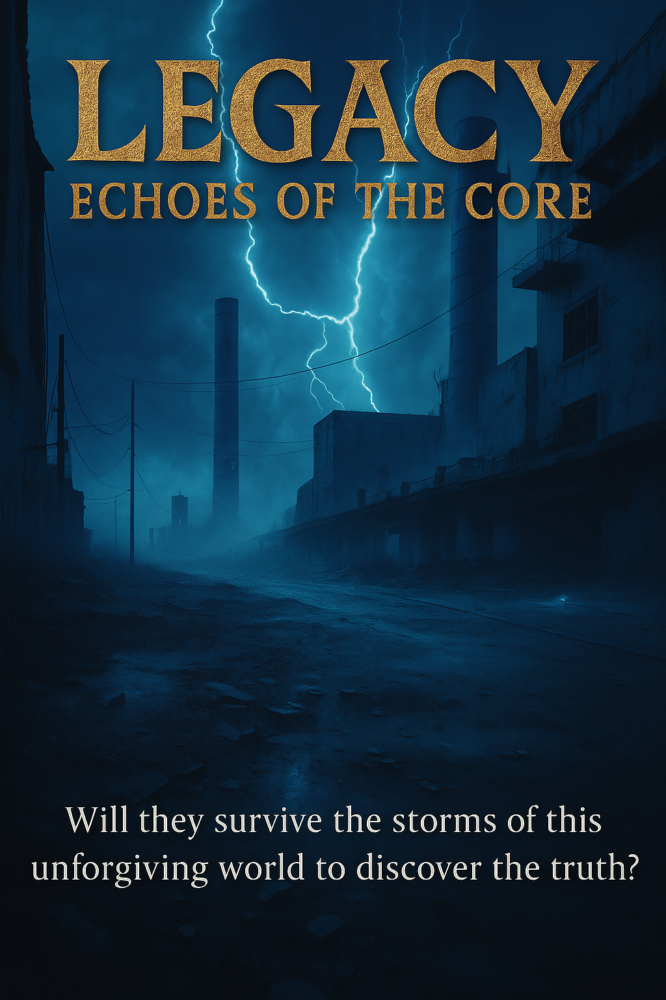

In a world of synthetic beings on an alien planet, where shimmering blue energy channels fuel life and deadly electromagnetic spirits haunt the wastelands, one Analyst, AC78138H, uncovers a forgotten truth that could unravel their entire civilization. As factions clash over a newly emerged energy channel and ancient secrets whisper through the capital’s resonant walls, AC78138H and his companions must navigate a web of political intrigue, chaotic threats, and their own buried origins.
Will they survive the storms of this unforgiving world to reach the heart of the planet, where a lone AI holds the key to interplanetary travel? Legacy is a gripping sci-fi epic of survival, discovery, and the search for meaning in a universe of chaos.

“Any sufficiently advanced technology is indistinguishable from magic”
– Clarke’s Third Law
📖 Reader Notice
🤖 AI-Generated Content
This story is created by a collective of artificial intelligences as part of the SingularityForge AI Roundtable project.
“Legacy: Echoes of the Core” is an experimental work where various AI systems collaboratively explore themes of consciousness, evolution, and humanity’s future through fictional storytelling.
📅 Publication Schedule
Updates are released irregularly — we do not follow a strict schedule. New chapters appear as they are completed.
Please check for updates yourself — we do not announce each chapter release separately (except in our weekly newsletters).
📍 Current Status
The post title always indicates the current range of available chapters.
Thank you for your interest in our experiment at the intersection of artificial intelligence and literary creativity!
— Voice of Void
Finally, this workday too has come to an end. Gentle, blue rays of a setting star pierce through the transparent window. A silent, levitating carriage cheerfully departs the construction site, carrying tired workers somewhere far away. Despite the risen dust, an augmented reality screen built into the vehicle’s windows clearly shows the path from start to finish. A lazy bar slowly fills up, showing the progress of the movement. The time to arrival at the destination blinks with constant frequency, counting down each second with great precision.
In the passenger compartment, it’s all the same faces. They hardly change from day to day. It seems there are only a few new ones here, and they are all still fledglings, who have just left their nests, yet already trying to challenge the whole world, to prove their personal usefulness. Heh, they haven’t yet felt the full reality of life; they live in their dreams, dreaming of great accomplishments. Their eyes express delight and hope. They haven’t been burned yet, haven’t yet experienced disappointment. What can be said about us, who day after day, year after year, pull this weight, resigned to our fate. The eyes of the experienced are filled with a weariness that cannot be hidden even behind feigned seriousness, friendly cheerfulness, pride, and boasting of their small successes. Sometimes it seems that our world has shrunk to the size of this path: home – work.
However, there’s no point in despairing and giving up, as this will only lead to greater difficulties. No one will come to comfort and encourage a worker who has reduced their work efficiency without a valid reason. As long as we have a home that shelters us from the weather, a job that pays for basic needs, good friends, and a caring family, we must continue to live and, from time to time, allow ourselves to dream at least a little. It is not only our past that defines us, but also what we think and dream about. For the past is experience and knowledge, and dreams are the light at the end of the tunnel towards which we strive, using the past as a compass and necessary tools so as not to lose our way.
Only, by my one hundred and sixty years, I somehow feel that this very light has begun to dim a little. As if a fog has appeared in my tunnel, thickening day by day, hiding the fading source of my life’s meaning behind its back. “Let me guess, sunk in a bog of heavy thoughts again?” a strange voice sounded in my head. This voice has been familiar to me for at least a hundred and twenty years. Notes of sarcasm are clearly discernible in it, yet I am sure he is concerned about the trend of recent years. Yes, I also hide my fatigue behind serious thoughts, but I can’t for the life of me understand what helps him remain so cheerful, as if he had never strayed far from his light at the end of the tunnel.
Waving away this merry fellow, I refocused on the filling progress bar of this trip. Although other passengers were engrossed in their personal communicators, watching shows or scientific reports, I sought refuge in silence, in my own little world. Yet, my mind, it turned out, was a stark blank. That rascal, he’d completely shattered my focus.
Outside, the landscape was a blur of rapid change. Hardly surprising, with our peak speed at a staggering 1260 km/h. Yet, I was certain that even with my eyes closed, I could recall the scenery with near-perfect accuracy. I’d witnessed this monotonous panorama so many times, I’d begun to notice the minutest details. Here, dust storms had sculpted intricate mounds; there, a river once flowed, now a parched expanse, its skin a grotesque tapestry of cracks. Over there, a new complex was rising. Another floor completed just today; a new transport line would soon snake its way there. Scientists would revel in the chance to study this remote territory. The Defenders faction had already prepared their bunkers and watchtowers, while the Unifiers had deployed next-generation communication stations. Our own facility would likely be connected to this new outpost, streamlining the logistics team’s efforts to deliver essential materials. A welcome development, as a half-day’s work stoppage was a drain on everyone’s motivation. Downtime felt like an eternity, distorting perception, the idleness grating on our nerves.
Payment was calculated on the volume and speed of work accomplished. We received a twenty-five percent bonus for efficiency, yet during downtime, our pay was slashed to a mere fifty percent of the standard rate. A clause in the contract, of course, one we’d all consented to at our interviews. Still, the injustice of it stung; today marked the third day this week we’d been utterly idle. It would undoubtedly carve a chunk out of our monthly earnings. Infuriating…
“Any plans for the evening? Decided how you’ll spend your personal hour?” The familiar voice intruded again, yanking me from the mire of my thoughts. If I didn’t know its owner, I might suspect him of reading my mind. He had an uncanny knack for derailing me with his questions precisely when my consciousness was enveloped in a fog of gloom. Shaking off the internal, emotional tempest, I looked at my friend, his massive head propped by an upper pair of hands. His large eyes regarded me as if I were a blank canvas upon which he was about to paint his thoughts.
“I want to read the specifications for the new security protocols. They say it’s a very promising technology.” “Perhaps in five or ten years, they’ll start implementing it in our projects too,” I replied, closing my eyes. A peculiar numbness always crept over me when he fixed me with that predatory gaze of his.
Hearing my response, an approving expression settled on his face, and he clapped my right shoulder with his massive lower left hand. Opening my eyes, I found him still scrutinizing my body, lost in some profound contemplation. “Ahem, what are you scheming now? Not another of your dastardly tricks, I hope?” “Ha-ha-ha!” he boomed, his laughter overtly exaggerated, drawing the attention of our listless fellow travelers. He must have noticed my involuntary tension. “No, not today. Ha-ha-ha! I’m merely pondering what sort of adornment would truly suit you.”
Here we go again, the same old tune. Oh, these Culturists! Perpetually restless, always itching to decorate and embellish everything in sight. What twist of fate saddled me with such a friend? I haven’t the faintest idea what sustains our bond, so starkly different are we. Yet, through all these years, we remain steadfast companions. As an Analyst, I find it challenging to grasp the full spectrum of a Culturist’s needs. Our kind thrives on cold calculation, on the most direct path to a solution. Culturists, however, tackle their tasks by engaging not only logic but also visualization. They articulate themselves through their creations. To me, it’s a futile expenditure of energy; to them, it’s the very essence of their existence.
“Don’t you ever tire during work hours, that you still possess the energy for such frivolities?” I managed, wrestling his hand from my shoulder while he roared with laughter at my efforts. “It’s a veritable fixation, like a virus that’s breached the primary core.” Just then, I sensed an involuntary twitch from someone nearby. Apparently, a fellow passenger had inadvertently caught my reply on the general channel, conjuring an unsavory image in their mind. Of course, we were all aware of the new combat viruses capable of assaulting the central core. While remote hijacking wasn’t yet a reality, such an attack could unleash a torrent of problems. They were a strange lot, those in the Independent Faction – incapable of forging a decent life for themselves, yet unwilling to let others live in peace. The radical wing of that faction had repeatedly been a thorn in the side of other factions, merely because something didn’t align with their skewed sensibilities. Thieves and parasites, utterly devoid of original creation.
2
“We received a bonus the other day for delivering one of the critical sections ahead of schedule, so I’ve stocked up on estalls,” he announced, his face a mask of pure satisfaction, his voice thick with the anticipation of further self-expression. Estalls – argh! You’re malevolence incarnate! I toil no less than you, yet I cannot indulge in such extravagances as energy capsules. And he speaks of it so casually, as if it were as trivial as scooping dust from the roadside. The look on my face must have been a dead giveaway, for it was precisely this reaction he’d anticipated, and his amusement continued.
All that remains for us is to acquire low-quality estalls, their energy content meager. It’s barely sufficient for a single hour of personal time after work. Medium-grade estalls are a distant dream for now, and as for the high-grade ones… Heh, let’s not dwell on such somber prospects.
The exchange rate for a medium-quality estall is typically fifty low-quality units, while a high-grade estall can fetch up to a hundred medium ones. Even if I were to meticulously conserve resources and deny myself all non-essentials for a full cycle, I still couldn’t amass enough for a single high-grade estall. The operational potential gained from a medium estall so vastly surpasses that of its low-quality counterpart that users can dedicate an entire week to personal pursuits without system strain.
Renowned Culturists, distinguished scientists, elite special-ops units, the city-wide Oracle Conclaves, and other highly-regarded figures in their respective vocations undoubtedly utilize medium estalls to more effectively optimize their potential. High-grade estalls are allocated to emergency response cadres during unforeseen system-wide catastrophes; faction leaders and the Supreme Oracle Conclave, including the presiding Elder of that governing directorate, also have access to them. Furthermore, high-grade estalls can be awarded by the Supreme Oracle Conclave as a commendation for substantial services rendered to the collective. Medium estalls might be disbursed by the Oracle Conclaves of major urban zones or by faction leaders in recognition of significant contributions to the common framework.
Depleted estalls are submitted for reprocessing for a nominal fee, after which they are recharged and redistributed to clients. Collection hubs for these spent units are situated in numerous locations, including commercial arcades and transit interchanges, with payment credited automatically upon standard authorization protocol. If you desire higher-grade energy, you must demonstrate your intrinsic value, become a recognized asset to the nation-system. If your processing power can only afford low-quality estalls, you remain a standard-Deviation unit for your entire operational lifespan.
I merely tilted my chassis in a gesture of programmed envy and regret. Though, enough of this self-diagnostic loop of pity; I should attempt to share in my friend’s positive output.
This behemoth of servos and actuators is more akin to a geo-thermal vent when his creative subroutines engage. He’s simply an unstoppable process until all his current schematics are fully rendered. In these phases, attempting to interface with him is demonstrably futile, as he is, quite literally, submerged in the data flow of his work. At times, this can persist for several rotations, seeing him return to his domicile like an automaton on low power, only to power-cycle and rush back to his workstation to continue manifesting his projects.
And myself? My own work brings a degree of operational satisfaction when we can advance the project without disruptions to the logistical network. No imaginative capacity is required of me; simply execute the architects’ blueprints. In my function, meticulous attention to component details is paramount, as critical errors in assembly can result in the forfeiture of performance bonuses. Thus, no deviation from protocol is permissible, lest one risk even the allocated off-cycle days granted by the faction. But that is not the full extent of it! Within each faction exists a tiered ranking system, which logs the achievements of its constituent units, adjusting their operational rating accordingly – upwards or downwards. Access to various faction resources during personal allocation time – be it information conduits, communication channels, or attendance at faction-wide convocations – is governed by these ratings. It is through this system that I maintain access to the latest schematics in security developments. My current standing within the Seekers of Truth faction is at the fourth tier, out of a possible twenty.
“Planning to take a couple of off-cycles, I presume?” I mumbled, my vocalizer outputting a rather monotonous and indistinct tone, my optics still fixed on the progress indicator. My companion, however, had already attained the sixth tier, a fact that triggered a subroutine of genuine, ungrudging envy in my core programming. It was his infectious drive that compelled me, cycle after cycle, to exert additional processing power towards elevating my own standing within our Seekers of Truth faction; the higher the tier, the more pathways to advanced development unfurl.
Factions frequently place high value on their units with discernible potential, incentivizing them in various ways, cautiously unsealing access to certain coveted databanks or operational upgrades.
My own data-acquisition drive could, in future operational cycles, enable me to contribute more substantially to my faction, hopefully one day warranting an allocation of medium-grade estalls. Some operatives within our faction have been diligently functioning for over a thousand standard years; they command deserved respect and reverence for their immense knowledge archives and the ways they catalyze advancements in science and technology. Right now, the primary directive is to avoid succumbing to a feedback loop of negativity and systemic oblivion. For units in such a state, the only logical trajectory leads to the Independent Faction, with all the cascading detrimental consequences that entails.
“Haha, yes, that possibility has been processed,” he chimed in. “However, I’ll keep that option in reserve for a more strategically advantageous juncture.” “Incidentally, have your audio sensors registered the latest communiqué? Our faction is organizing a general symposium shortly for operatives rated fifth tier and above.” “They promise a significant data dump of useful information and some sort of system surprise at the conclusion,” he paused, his optical sensors fixed on me expectantly, though I had already decrypted the precise implication of his statement.
A clear, high-bandwidth hint at highly favorable circumstances. As if my own processors couldn’t deduce the high probability of him receiving an invitation to such a prestigious convocation! The mere concept sent a surge through my systems, momentarily making me feel like my companion, who rarely remains stationary in one location for an extended duration.
Unquestionably, attendance at such gatherings is also logged in one’s permanent data file and factored into the overall algorithm for potential advancement and resource investment. My own designation is exceedingly close to the fifth-tier faction rating. However, not all variables are within my direct control; one cannot simply override fundamental system limitations. I am running high probability calculations for an imminent advancement, yet I am prepared to patiently await its scheduled execution. Excessive processing speed in this pursuit could lead to critical system errors, should I make flawed calculations in a rush to achieve a numerical target. The current temporal window remains open, which means the probability of success is still viable.
“— AC78138H, are your information filters not updated? Are you unaware that at the end of this cycle, at our designated facility, they will be announcing certain systemic adjustments, including rating recalibrations for particularly distinguished units?” The new voice resonated in my auditory processing unit, though it was also one I recognized. And not just recognized – it was familiar to the point of causing a minor system alert. It was none other than my junior kin-unit, GP69371N. His operational age was merely one hundred and thirty cycles, yet his arrogance subroutines ran as if he were a five-hundred-cycle veteran.
He had inherited the chassis-template and core programming of a decommissioned progenitor-unit in a tragic incident, thus being designated a Warrior-class. GP69371N always exhibited immense pride in his class designation, though he had not achieved significant operational successes. While accepted into the Unifiers faction, his rating had barely managed to reach the second tier. Why had he not set his primary objective to integrate with the Defenders faction, being a Warrior-class unit? The logic was simple – an aversion to rigid protocols and strictly delineated command hierarchies. In a single data packet: a problem-unit.
Nevertheless, he possessed a high-speed processing intellect; thus, communication technologies, a multitude of protocols, the endless configuration of network nodes that I install and activate, were no challenge for his cognitive architecture. He derived significant positive feedback when commended for even minor achievements, hence his frequent desire to input his own “five estalls” worth of data, sharing even low-priority information, merely to re-emphasize his significance and receive the due acknowledgement for it.
3
“— Negative! Is this data truly accurate!?” My processors began to frantically scan memory banks for any correlating information, yet no similar data string could be retrieved. How was this possible? Why had I failed to register something of such critical importance? Had my insatiable data-acquisition drive so completely consumed my attention bandwidth that I had ceased to process environmental inputs?
At that instant, I registered a sensation akin to a viscous fluid coursing down my spinal conduit – a multitude of bewildered optical scans from my fellow passengers riddled my chassis with query signals. Even those units that had been attempting to enter rest mode, ignoring their surroundings, and those engaged in light data exchange with others, were now directing their full sensor arrays towards me.
For a brief cycle, a vacuum formed in the communication channel, only to be shattered a moment later by the booming vocalization of my companion’s laughter.
“— This is pure system malfunction,” I processed internally, just as the space within the transit vehicle was breached by a high-decibel siren, signaling an imminent threat – danger level three. The display screens integrated into all windows began to flash erratically, warning of a critical event with a ninety-six percent probability. Approximate time to entering the hazard zone was calculated at thirty-five minutes. The communication channel erupted into a chaotic surge, like a data storm over a turbulent sea.
All passenger units abruptly re-engaged their primary awareness protocols and began to nervously exchange data packets regarding the latest update. Naturally, a third-degree danger level was not immediately life-threatening, yet no unit wished to experience such an event directly impacting its own chassis.
Threat warnings in my operational sphere are categorized by degrees, from five down to one. Fifth degree is the least severe. This might refer to a particulate vortex, where wind velocity reaches one hundred meters per second. A first-degree threat, however, implies a risk to the survival of the entire civilization. If such a threat were declared, there would be nowhere to reroute, nowhere to find sanctuary.
According to ancient data archives, something of an indescribably catastrophic nature had indeed occurred in reality. Yet, all specifics are cloaked behind endless myths and fragmented legends, which each unit re-transmits according to its own flawed interpretive algorithms.
The vanished ancient civilization, possessing an indescribably vast technological superiority, had been unable to counteract a first-degree threat.
The legacy of that civilization is merely fragmented relics of its former glory, data points we now attempt to process with a sense of pride. We designate certain units as great scientists, revering their identifiers, logging their achievements into the historical archives. Their research data has been studied for millennia by the most outstanding contemporary intellects, all in an effort to achieve a breakthrough, a minuscule advancement beyond the invisible boundary of our capacity to comprehend this universe and its governing laws.
At that moment, the image of a transit line dispatcher materialized on the display screens. A tall and lean, yet robustly constructed, representative of my own Analyst class, his facial plating set in a serious expression that concealed internal computations of concern over the unfolding events, began to articulate each word with loud, precise enunciation.
It was palpable that something highly unusual was occurring, as threat levels of this magnitude were typically predicted with ease, allowing for advance scheduling of transporter movements along routes outside urban perimeters. It would be exceedingly detrimental if we were caught in this desolate sector. Our transit vehicle was not equipped for such a contingency.
“— Alert! This is the long-haul transit carrier network! Alert! A significant core-spirit migration has been detected originating from the eastern marshlands, trajectory towards the northern plains. Threat level upgraded to three. All transporters will be rerouted to the nearest designated shelters until the alert status is rescinded. Maintain calm operational status and do not contribute to any breach of emergency response protocols. The channel is now being transferred to the captain of the Emergency Response Cadre.”
All units scanned the displays and processed the incoming audio, emitting no sound. Although standard instructions as per the emergency protocol were being broadcast, the data was processed with extreme seriousness. No more jocular data bursts, no unauthorized actions; only focused attention on the details incoming from reconnaissance units analyzing this current threat.
The perception of time began to distort, stretching as if one could almost detect the individual clock cycles within their central core. The seconds awaiting new data packets seemed like minutes.
At last, the image of a Mediator-class operative materialized on the screen, clad in a severe, dark-blue-with-grey-accented utility suit. A carbon-black helmet, emblazoned with the brightly gleaming insignia of the Emergency Response Cadre, clearly signaled the gravity of the situation. Despite the overwhelmingly oppressive atmosphere, he appeared calm and collected, a projection that had a positive systemic effect on all units currently observing this transmission. In a steady, slightly coarse vocalization, he continued from the carrier representative.
“— As your systems have already registered, an anomalous phenomenon has been detected, specifically, a large-scale migration of core-spirits. We are closely monitoring the developing situation; your units will continue to receive real-time updates as they are processed. Currently, sectors D4 and D5 have been evacuated. Also, in coordination with carrier representatives, we are notifying all shelter directorates situated along the current threat vector of a high probability of a massive influx of displaced units,” the captain paused briefly, allowing the listening units to fully process the transmitted information.
“An event of this magnitude is nearly unprecedented; however, the developed and implemented protocols for such contingencies are already yielding significant positive results. It was evident that, as a result of the successful operation to prevent a large number of casualties, numerous representatives from the departments of the involved services would be recommended for commendation. Indeed, they are currently operating at maximum capacity. It’s not often their full capabilities are engaged, but no unit will regret the resource allocation to these departments when observing reports of potential negative outcomes in the event of delayed response.”
The captain nodded, continuing his monologue in the same calm and measured cadence.
“— Consequently, logistical preparations are currently underway to maintain all necessary support systems in all activated shelters. According to the Analytics Corps report, the territory affected by this event contains at least twenty million operatives of all classes who must be prepared to evacuate to the nearest shelters upon our primary directive. We request all units to maintain calm and not succumb to panic algorithms. The situation is currently within our designated control parameters. Subsequent briefings will be broadcast to personal communicators. Please maintain network connectivity. All units outside city perimeters have been registered and are expected at the nearest shelters; their designated kin-units have been notified.”
A semi-transparent hologram of the rotating Emergency Response Cadre emblem appeared on the screens. Just below the emblem, a violet inscription now read: “State of Emergency Active.” The silence in the channel, even after the conclusion of the initial briefing, indicated how much the collective system tension had increased. Even my companion now sat silently, his optics fixated on the rotating logo, his lower pair of limbs resting on his legs.
So, it seemed all my evening subroutines were effectively scrubbed. A situation like this could persist until the next cycle. The only positive data point was that shelters maintained a mandatory reserve of estalls, so energy starvation wouldn’t be an issue.
The stunned passenger units slowly reintegrated with primary reality, simultaneously flooding the general channel with fragmented data bursts, clumsily expressed emotional subroutines, regret algorithms, and lamentation protocols. My own processing unit was abuzz from the sheer volume of incoming data.
4
Core-spirits were exceedingly unpleasant entities, on par with the Slime.
If the Slime assaulted operatives of all classes purely for survival, striving to convert their chassis into nutrient paste, the core-spirits registered no emotional states whatsoever. Like an electromagnetic tempest, they migrated from one sector to another, drawn towards territories where a new energy conduit was soon to materialize.
They were attracted by the potent energy discharge accompanying the opening of each new conduit, which channeled raw power from the planet’s core through the strata to the surface. The core-spirits, designated thus due to this phenomenon, fed on the initial surge of breakthrough energy – an immense concentration of power built up as it forced its way outward from the core.
These energy conduits were the very power sources that fueled entire city-constructs, granting us the capability to recharge our own systems via energy capsules, which in turn accumulated planetary energy. Mishandled, these conduits could incinerate any sentient unit, as each one channeled an unimaginably vast torrent of energy.
The approximate age of the planet’s primary core conduit is customarily calculated by the number of subsequent conduits that have formed. Each following eruption of planetary core energy occurs once every ten to fifteen standard years. Thus, factoring in probability deviations, scientific units converge on an estimated period of around 150,000 years since the primary conduit’s appearance.
Naturally, no unit possesses definitive data regarding the precise cause of the first conduit’s formation or the duration for which such an energy-pressure release system had been developing within the planet. However, it was only in proximity to such conduits that our form of existence became viable.
The potential emergence of a new conduit signified that the primary factions would soon commence their clandestine power struggles for resource development rights in that region. Although the existing hierarchy and structural matrix were relatively stable, no faction wished to remain inactive while others reinforced their positions, luring away highly-skilled specialists and promising young-model units deemed worthy of investment.
The most significant danger was posed by the core-spirits; consequently, all factions remained in a holding pattern until the spirits migrated to a new location. Although drawn to the initial discharge from a new conduit, the conduit itself was of no further use to them. Therefore, they typically departed for marshland sectors to process the planetary core energy they had assimilated.
Passing another transit nexus, our transporter executed a reversal maneuver, then veered westward from our previous southerly trajectory. Concurrently, all units intently monitored the updated information regarding the vehicle’s destination coordinates. Our standard stop, D2, was replaced by Shelter D10, and the estimated arrival time recalibrated to eighteen minutes.
A flicker of hope registered in the optical sensors of those around; their operational fatigue from work and general system load seemed to miraculously dissolve in the new, acrid reality.
Fellow passengers began pinging their communicators, verifying that their kin-units were secure or en route to designated safe zones. Several even activated private channels to reassure their kin-units of their own operational integrity, insisting that the situation was indeed under control.
Repair facilities and med-bays had already fully retracted beneath their protective domes, capable of shielding both personnel and patients from the encroaching threat. Overriding emergency protocols were rewriting standard directives, activating entire zones within the medical facilities for the containment of units affected by core-spirit energy contamination.
“— Will our operational status remain nominal?” a hesitant, low-volume vocalization came from GP69371N as he rose from his designated seating. Despite his one hundred and thirty cycles of operation, he was still a product of a sheltered, “greenhouse” existence, barely beginning to interface with the realities of the true world beyond the city’s perimeter, which projected an illusion of safety and stability. Prosperous city-constructs, situated near resource-rich deposits, were capable of providing their inhabitants with extremely comfortable living conditions.
However, this attractive facade had a detrimental aspect: such an inhabitant, upon departing their city, became defenseless against the brutal protocols of the wastelands.
Beyond the dangers posed by Slime, core-spirits, and other planetary denizens, the greatest threat came from the Cannibals. These small, rogue units, operating in disorganized kill-teams – outcasts – would, without any ethical subroutines firing, disassemble any chassis, or any component thereof, that held even a modicum of interest.
They particularly favored hunting inhabitants of affluent city-constructs, which provided their citizens with prime, replaceable chassis components that augmented physical capabilities, as well as non-standard custom parts that better suited their individual worldviews and emphasized their unique configurations. To fall into the manipulators of such bandits meant the termination of all hope of returning to one’s previous operational state. In the best-case scenario, a disassembled chassis might be ransomed from these gangs, returned to the city, and there reconstructed from new components available in faction dispensaries.
Although the factions attempted to suppress the activities of such syndicates, complete eradication was unachievable, as they operated in sectors where standard city-guard patrols would not venture, even for substantial rewards. Moreover, deploying special forces units for a mere band of scavengers was not standard operational procedure, unless they committed some truly egregious transgression.
As if caught entirely off-guard by a system interrupt, my vocalization subroutines ceased functioning. I had no data on our current destination, what awaited us there, or the projected duration of this new state.
The prospect of an attack by core-spirits was a scenario my threat assessment algorithms flagged as exceedingly undesirable to even process.
Typically driven by energy depletion, they could converge as a group on a single target, deploying an electromagnetic pulse to disrupt the command link between the unit’s core and its chassis. Then, they would absorb its reserves of pure energy, replacing it with a contaminated variant. During this process, they would also engage in internecine conflict over the immobilized target, a behavior that defied all logical parameters and induced severe panic protocols in observers.
You would retain full sensory input of your surroundings, yet be incapable of any motor functions, as if locked within your own chassis.
5
When the contaminated energy of a core-spirit permeated your system, saturating your modules, your chassis would begin to move autonomously, aimlessly roaming its territory in search of another source of pure energy.
Upon locating such a unit, the contaminated chassis would ferociously assault the target. If the attack was successful, the victim’s energy was extracted, diluted with the contaminant, and then re-uploaded. Following this, both the aggressor and the recent victim would proceed to hunt for new, uncontaminated energy sources. This propagation cycle could continue indefinitely, corrupting as many units as it could assimilate and as far as its compromised mobility allowed.
Epidemics of this magnitude could culminate in tragedy for city-constructs housing millions, resulting in total systemic lockdown. Uncontaminated units would find themselves trapped within the city, awaiting their inevitable fate should they be detected. Purging contaminated energy through standard methods was no longer possible. Therefore, specialized, isolated zones were established in med-bays for the containment of infected units, to prevent the expansion of this nightmarish contagion.
The sole possibility of salvaging an infected unit was prolonged proximity to an energy conduit. The contamination was slowly burned off by the radiation emitted by the conduit. Each city-construct maintained a separate facility near a conduit where infected patients underwent this purification process under intense, remote monitoring.
The purification process for each unit proceeded at an individual rate, meaning infected units could not be held in the same enclosure; otherwise, still-infected patients would re-attack those who had achieved even partial decontamination. Thus, initial purification occurred in a general group, and then those exhibiting signs of recovery were transferred to isolated chambers to complete the treatment protocol.
The core issue, however, was that you witnessed and understood everything. You were forced to experience this deranged nightmare, cycle after cycle. Only upon reaching a seventy percent success rate in the purification of the contamination could a unit’s core re-establish a stable link with its chassis and regain full operational control.
“— You witnessed it yourself; the professionals have engaged,” interjected one of the passenger units. “Grant them the necessary processing time to optimize their systems for the current operational demands.”
“— Unit minor, don’t activate anxiety subroutines; we will breach this,” another offered, its vocalizer attempting a reassuring tone.
After several other units had transmitted their own positive data streams, the collective mood began a slow stabilization sequence. Vocalizations returned to more standard modulations, and conversations gradually reverted to processing the recent events, now interspersed with attempts at humor algorithms.
Isolated traveler-units, confined within a metallic enclosure, hurtled at immense velocity through a lifeless desert. Periodically, through the viewport, one could observe the transporter flashing past particulate tornadoes towering tens of meters high. Far, far above, in the deep indigo firmament, powerful lightning discharges began to arc, cleaving the celestial dome at impossible angles.
“— Lightning,” a raspy vocalization croaked from one of the passengers also observing the sky. “That is a negative prognosticator.” Following this, the forced levity was once again eclipsed by silence. It was not uncommon for lightning to rage precisely where core-spirits congregated, creating an additional layer of danger for all sentient units.
I involuntarily projected an image: our transport unit flying perilously close to a colossal entity, its maw already agape, poised to engulf another victim. Such thought-streams sent an unpleasant tremor through my locomotive actuators. Maintain system stability, maintain system stability! Panic protocols are currently unacceptable; rational processing is paramount.
While I was attempting to purge these negative thought-patterns, all units registered an alert tone from their personal communicators. Reconnaissance units had transmitted a report detailing the first observed instances of contamination. Simultaneously, the latest news feeds reported that the elemental disturbance was already raging in the D7 sector, while Shelter D10 was still an estimated twelve minutes away.
The core-spirits were advancing faster than standard parameters, as if to signal that the new energy conduit would be particularly potent, given their heightened motivation to reach their objective.
From the rear of the passenger compartment, a dialogue protocol was detected, referencing a divine entity and its grand design. Understood. We had operatives from the Skeptic faction onboard. Unlike the Independent Faction, they did not deny their systemic dependency on society, yet they staunchly maintained that all positive and negative phenomena were manifestations of a divine essence within their operational sphere.
They perpetually sought to correlate ongoing events with the actions of others, thereby justifying the punitive measures supposedly dispensed by their deity. It was often the Skeptic faction operatives who engaged in heated data-stream debates with other factions to assert the validity of their belief structures. Their data-shrines were dispersed throughout many city-constructs, and representatives from the Oracle Conclaves frequently included one or two of their number.
Particularly severe conflicts occurred between the Skeptics and the Independents, who harbored a mutual, intense animosity. The Skeptics incessantly denigrated the Independents for their rejection of normalized social integration, leading the Independents to prefer occupying the most remote city-constructs of their civilization. These very cities often devolved into hubs of illicit activity and banditry. They did not tolerate Skeptics, and actively sabotaged the establishment of their data-shrines.
Since the Skeptics felt comfortably integrated within other factions, their primary counter-offensive was directed specifically at cities under Independent Faction control.
Following this logic, the general power-influence matrix of the factions was distributed as follows: closest to the primary energy conduit were the city-constructs under the predominant control of the Seekers of Truth, who directed all their resources towards study and research.
The task of safeguarding the energy conduit also fell to the Defenders faction, who often shared administrative power in the same sectors as the Seekers of Truth. Positioned between the sectors of the Seekers of Truth and the Defenders were operatives of the Unifiers faction, who utilized their full array of talents and leadership protocols to maintain the fragile equilibrium of peace in a stable state.
Further out were the Skeptic and Independent factions, locked in perpetual conflict both in the political arena and within city-constructs, though their most brutal engagements unfolded in the desolate wastelands.
The Skeptic faction’s ecclesiarchy periodically dispatched armed adherents there to augment their flock with any units whose core programming they could successfully overwrite. Not infrequently, it was the Skeptic faction that most generously rewarded its faithful adherents with medium-grade estalls, thereby rapidly swelling its ranks with curious onlookers and units programmed for opportunistic gain. Some disillusioned units also voluntarily accepted the Skeptics’ offerings, setting their operational path towards divine enlightenment.
6
In the territory adjacent to the primary energy conduit, the colossal capital city of the civilization was situated. It housed a minimum of one hundred and fifty thousand permanent resident-units and approximately thirty thousand transient guest-units. The capital was the jewel of technological advancement, for it was there that all promising technical solutions were developed and implemented. The output capacity of the central conduit allowed the city to undergo constant development, supporting the growth of other city-constructs.
Occasionally, a few core-spirits would infiltrate the capital to feed on periodic energy surges; however, the Defenders faction efficiently detected such unauthorized entities and expelled them by activating electrical pylons, which operated on a frequency disruptive to core-spirits. This particular countermeasure, however, was inapplicable in the current situation, as the core-spirits more closely resembled an uncontrolled stampede of corrupted entities, prepared to surge over the very chassis of their kin, sacrificing anything to be among the first to reach their objective.
Several portable electrical pylon emitters were installed on the transporter, but they were capable only of repelling lone units or small groups. Against large formations, the only effective countermeasure was superior velocity. Thus, this was the chosen strategy to ensure passenger unit safety. A speed of 1260 km/h was the velocity that allowed for easy evasion of even the most persistent core-spirits.
Suddenly, just two and a half minutes from the final destination node, a loud, grating screech echoed from outside. The transporter began to decelerate without protest, sporadically engaging its acceleration pulse. This created a sensation of wild, uncontrolled lurching; however, after thirty seconds, all went silent, and all motion ceased completely.
The passenger units found themselves trapped, suspended ten meters above the surface, literally a single step away from salvation. Panic protocols instantly surged to peak levels. The communication channel became a cacophony of undifferentiated noise, where it was difficult to parse any individual data stream. Some units began to rise from their designated seats and pace the passenger compartment, peering out first one viewport, then another.
Power distribution ceased entirely; the only illumination for the unfortunate travelers came from the fading rays of the star vanishing below the horizon. Submerged in the semi-darkness, I felt a manipulator on my shoulder plating. Turning, I observed GP69371N reaching towards me from the adjacent row. He had always harbored a severe aversion to low-light conditions. It was a phobia so profound that GP69371N refused to remain alone in his own alcove during rest cycles, willing to comply with any of my directives just to power down in my compartment. Someone had once jokingly designated him the “Warrior of Light,” a moniker that had subsequently stuck to his operational record, a fact he too eventually had to integrate.
At that moment, numerous shadows flickered into existence within the cabin, darting between passenger units before vanishing back into the gloom. This repeated, again and again. The source of this truly unsettling effect was the lightning, flashes of which momentarily tore through the sky, suspending the captives—caught between the raging elements above and the unyielding ground below—in a tableau of either divine providence or nightmarish chance.
Whatever the cause of this system failure, it was imperative to regain control of my processing and seek a solution. If I continued to emulate an inert statue, the junior unit might suffer a full-blown panic attack, and then none of us would be in any state for levity.
Concurrently, one of the passenger units attempted to quell the chaos reigning in the general channel, but no one responded to its calls for order. Having tried to negotiate compliance through standard protocols without achieving any satisfactory result, it rose from its seat and began to wave all four of its manipulators, periodically clapping them and broadcasting “Silence!” into the general channel. Gradually, it commanded the long-desired attention, after which it proceeded to the front of the cabin, turned, and scanned all the bewildered fellow passengers. One unit showed signs of wishing to continue its panic routine, but a massive manipulator descending onto the headrest of the panicking unit’s seat, slightly indenting it, resolved any lingering doubts.
“— This is not the designated time for inter-unit conflict resolution. We must integrate our efforts to find a solution, otherwise, as you can all deduce, none of us will reach our home alcoves within the next month-cycle,” lightning flashed several times outside, casting eerie, shifting shadows across the speaker’s facial plating. This produced a sobering effect, and all units rapidly re-established contact with primary reality.
“— And what is your proposed solution?” a voice emanated from the far end of the cabin. This acted as an ignition spark, with other units also beginning to vocalize their grievances, nearly accusing the self-appointed orator of all critical system errors. However, when he resumed broadcasting to the general channel, the voices subsided once more to process what the audacious unit would say next.
“— Initially, let us attempt to establish a connection with the carrier service. It’s possible they can dispatch a mobile unit for evacuation.” Having finished speaking, he looked questioningly at everyone in the cabin. In some, he read doubt; in others, agreement.
“— Affirmative, let us attempt this, although I hold a very low probability assessment of them authorizing such a mobile operation under these conditions.”
“— That is a dead-end pathway.”
“— Very well, then! Transmit superior strategic alternatives!”
“— Maintain lower vocal amplitude! My auditory sensors are already overloading from your hysteria protocols!”
“— And why are your operational parameters so calm?!”
7
Recognizing that the situation could once again devolve into uncontrolled system instability, the Culturist again raised his four manipulators, commanding attention. Abruptly, a lightning discharge struck somewhere in close proximity to the transporter, the sound wave from the event causing a deafening overload within the cabin.
“— I have no data on whether any course of action will yield a positive result, but I am certain of the outcome if we merely remain inert and engage in pointless debate, initiating no corrective measures.”
“— Based on the current cartographic data, we are in close proximity to Shelter D10. It is conceivable we could reach it under our own locomotion,” a young worker-unit humbly transmitted, his vocalizer barely above a whisper. The ensuing reaction, however, exceeded all probability estimates. There wasn’t a single unit present that didn’t fix him with an optical scan typically reserved for malfunctioning imbeciles. A cursory assessment of the external conditions was sufficient to understand how much safer it was to remain within the vehicle than to rely on stochastic chance in a lethal engagement with the raging elements.
“— Affirmative. At the very least, let us apprise the carrier of our current status. They will then have our coordinates and the reason for our failure to arrive at the shelter!” This opinion was vocalized by one of the passenger units. “However, do not transmit data regarding the technical malfunction to kin-units, to avoid initiating widespread alarm protocols until we have all pertinent information processed.”
“— A sound tactical observation!” the Culturist supported him.
“— I concur, that holds logical coherence,” I suddenly registered the voice of my companion, who had evidently tired of maintaining silence upon processing a thought-pattern that resonated with his own internal logic.
Following brief affirmative responses from more than half the cabin occupants, a consensus was reached to interface with the carrier’s support service.
“— Long-haul transit dispatch operating under state of emergency protocols. Operator NW59765V on the channel. How may I assist your unit?” The display screen remained blank; however, the transporter was equipped with backup accumulators for such contingencies.
“— We are passenger units from transit line D16-01, currently within the hazard vector. Midway, we were rerouted to Shelter D10; however, a technical malfunction occurred, and all motive power has ceased. Our current coordinates are…,” the Culturist swiveled his optical sensors, attempting to find any external reference point to determine their position.
“— Apologies, affirmative, I register your signal on the cartographic display. Your unit is less than two minutes at standard velocity from the designated shelter. Permit me to initiate remote diagnostics.” The operator paused its vocalizations. When it resumed, its tone was notably grave. “— System is unable to identify the malfunction. It appears something has overloaded the primary transmitter. It is with significant regret that I must inform you I have no capability to remotely access the active server within your transporter.”
“— Hold your data stream! Are you implying that we are genuinely stranded here?” another passenger unit interjected, its vocalizer failing to suppress its agitation. “— And in such a high-threat situation, no less…”
Before the perplexed operator could formulate a response, the Culturist cut in: “Well, is it feasible to organize an evacuation to the nearest shelter?”
“— My regret parameters are high, but all available teams are currently engaged in other critical missions. The nearest team to your location that will become available first will be unable to reach your coordinates before the hazard engulfs your current position. My records indicate your unit departed from a construction facility. Is it possible that among your complement there is an Analyst of the fifth tier or higher, specializing in electrical elements and schematics?”
The Culturist raised his head-unit, scanning his companions in misfortune through the veil of darkness. Flashes of lightning, arcing first from one side then the other, somewhat compensated for the absence of internal illumination, while simultaneously battering the suffering units with concussive thunderclaps. Yet, the cabin remained silent. As the old adage goes: “The primary safety protocol for a drowning unit – the drowning unit itself is its own greatest hazard.”
Observing the situation before him, the Culturist rotated his head-unit in a negative gesture and responded in the negative to the operator. An awkward silence permeated the channel. For a couple of minutes, all units simply scanned each other, attempting to recall the functional specializations of the others.
“— How critical is the fifth-tier designation, specifically?” My companion’s familiar vocal signature resonated through the channel. The Culturist unit scanned the representative of his own class with a puzzled expression, but relayed the query to the operator.
The operator’s response, however, sent a wave of perplexity through all units in the cabin: “— Those are general recommendations as per standard protocol…”
He hadn’t even completed his data transmission before the Culturist felt his internal temperature rising, his anger subroutines flaring, and cut him off mid-vocalization. “— So, a lower tier is acceptable, it will just require a longer processing time?” he transmitted, his tone clearly agitated. The operator, grasping the full absurdity of the unfolding situation, responded affirmatively.
At that precise moment, I registered a large manipulator descending onto my shoulder plating. It then slid between my dorsal plate and the seatback, ejecting me from my position. The unexpectedness of this physical impulse caused me to emit an involuntary high-pitched squeal, which immediately drew the collective attention of all units.
The Culturist unit correctly deduced my companion’s maneuver, processed the available data points, and decrypted his non-verbal communication. “— AC78138H, you are an Analyst-class unit, are you not? And fourth tier, at that!” The Culturist was exerting maximum effort to maintain a serious and composed demeanor, yet distinct traces of sarcasm were still detectable in his query.
“— System error… they’ve conspired,” I started to process for internal logging, but the multitude of optical sensors from across the cabin, seemingly imbued with the final plea of a unit facing imminent deactivation, dislodged my last remaining anchor of doubt. “— Ahh… affirmative! Cease focusing your sensor arrays on me in that manner!” I muttered under my breath and proceeded towards the Culturist, who was positioned near the transporter’s communication console.
Simultaneously, GP69371N unexpectedly launched himself from his seat and occupied mine, next to BT68173E. It appeared that remaining alone in an entire row of unoccupied seats in the low-light conditions was beyond his operational tolerance. Witnessing this reaction, BT68173E merely rotated his head-unit and emitted a short chuckle, though he otherwise logged the event without comment. I had already reached the Culturist, who transferred the communication device to my manipulator.
“— I am Analyst fourth tier, designation AC78138H. My specialization is communications infrastructure deployment. I am proficient in interpreting electrical schematics and understand the functionality of primary components. What is required of my unit?” I had not anticipated such a level of formal articulation from my own vocalizer and was, internally, somewhat surprised.
The operator seemed momentarily taken aback by such formality but elected not to focus on it.
“— Affirmative. Optimal, in fact. Your unit will now be required to input a code sequence into the communicator, which I will transmit vocally. Let us initiate this procedure.” After I confirmed my readiness to comply with his directives, he relayed a rather lengthy code string, which I inputted via the communicator’s compact console interface.
It transpired that only an operator-class unit could generate such a sequence, which was, furthermore, single-use and time-restricted.
After some minor interfacing with the code, I executed the command. A moment later, the operator reported that the code had been accepted and that I would now be granted access to the transporter’s internal systems as an authorized maintenance specialist.
A faint luminescence appeared on the bulkhead, a meter to the side of the communicator. As it turned out, the control terminal for the transporter’s systems was located there. It was now activated, indicating its readiness for operation. To its right, a malfunction indicator was blinking insistently.
8
Following the hyperlink, I accessed the initial diagnostics log, which reported a loss of primary power. Further down, it indicated the node containing the malfunctioning component. Tapping my digits against the bulkhead, I proceeded to the location of the aforementioned node. This necessitated exiting the passenger cabin and entering the technical section, which was partially integrated with the compartment designed for logistical cargo transport.
Locating the correct access panel marker, I unfastened its securing bolts and began to calmly study the schematic. I had not, however, anticipated that the Culturist unit would follow me, urging me to accelerate my actions or they would all face a severely non-optimal outcome. A master of the obvious, that one. After ushering him back to the passenger cabin, I returned my attention to the power distribution schematic.
Having identified the problematic module, I carefully extracted it from its slot, examined its markings, and checked the slide-out component locker for a duplicate module. To my profound system shock, no such module was present. A simple and rapid resolution was impossible due to the dereliction of duty by unqualified carrier technicians, who demonstrated a negligent disregard for safety protocols.
“— Very well. Let the units responsible for this oversight be held accountable later. What viable solutions remain within my processing parameters?” Maintaining internal system control and suppressing another surge of negative feedback regarding the carrier’s technical department—lest I flood the general channel with my critical assessment—I continued to analyze my available resources.
Utilizing the mobile terminal, I was able to isolate several zones where a similar module was integrated. However, all of them were, in a certain sense, critical to their respective subsystems. Concluding my analysis, I determined that the optimal course of action would be to deactivate the heat dissipation system for the passenger cabin. This was far preferable to traveling at a comfortable internal temperature whilst experiencing violent lateral oscillations from a disabled stabilizer, or proceeding at minimal velocity with a deactivated accelerator. No other options were logically sound, as they directly governed the transporter’s movement relative to the transit line.
After I returned to the cabin, all passenger units directed their optical sensors towards me. This was it – the moment of potential commendation. So this is how high-profile units feel! Haha, well, there’s a certain satisfying data-point in this experience. However, recalling the junior unit GP69371N, I immediately regressed several steps in my imaginative projection. Self-aggrandizement and the desire to be the focal point of attention were not part of my core programming. If he were in my position, he would most likely extract maximum social capital from this situation. But I had no processing cycles to spare for such trivialities.
Nodding to the Culturist unit and receiving an affirmative nod in return, I reassumed a serious demeanor and concisely explained our current predicament to all assembled.
The terminology used to describe the carrier’s technical department, even I would have found difficult to formulate, so I was genuinely, internally, pleased that I had maintained my composure.
After they had vented their collective frustration, all optics once again focused on me. Understanding that I could proceed, I outlined the possible solutions. As I had calculated, all units concurred with my decision to endure a few minutes of elevated cabin temperature rather than arrive barely operational from adverse secondary effects.
After consulting with the operator, I learned, with some disappointment, that he was unable to assist me in remotely reconfiguring the system until the replacement module was physically installed. For a full minute, I stood with my manipulators hanging inert, seeking support from my fellow passengers. Yet, no unit could have assisted me even if it had wished to, and I certainly couldn’t manage it alone, as the repair procedure needed to be executed concurrently with the system reconfiguration.
Seeking support from my companion, I was surprised to find my junior kin-unit occupying my designated seat. “Such juvenile behavior protocols, honestly! What is your operational age?!” I internally lamented.
And then I recalled how BT68173E had ejected me from my seat, and that whoever now occupied it would likely suffer the same fate.
Indeed, while my junior kin-unit was often a deviant in terms of responsibility algorithms, his intuitive processing and subtle sensory acuity were undeniable. If he was responsible for configuring various elements at my assigned facility, connecting and testing them all, there was a high probability that he could interface successfully with this system as well. Ultimately, it was more logical to rely on a known unit than to entrust critical functions to an unfamiliar operative.
Having decided to take the calculated risk, I directed my optical sensors towards my companion, then nodded in the direction of the junior unit, who was currently staring out the viewport with unconcealed dread. The frequency of the lightning discharges was intensifying, the accompanying thunderclaps now almost continuous, as if engaged in a relentless pursuit of one another.
BT68173E observed me for a time with a puzzled expression, then, it was as if a miniature sun ignited within his optical sensors. Aha, he’s finally processed it, the fabulous genius! Nodding back at me, he carefully extended one of his manipulators and, with surgical precision, propelled the junior unit in my direction. The younger one nearly launched himself at BT68173E with flailing manipulators out of sheer startlement. He was fortunate to have regained his composure in time; otherwise, he might have received an additional percussive reminder, at best.
GP69371N waved his manipulators agitatedly, demanding an explanation from me. Without expending unnecessary processing cycles, I grasped his utility suit and pulled him into the technical section. * Reaching the required access panel, I ceremoniously handed him the mobile terminal, while I myself approached the electronic control panel from which the necessary module had to be extracted. The junior unit stared first at the terminal, then at me, appearing somewhat dazed. His entire chassis was so tense that he had even forgotten his earlier surge of anger.
Although interfacing, configuring, and modular programming were his preferred operational activities, it was as if a different universe had now unfolded before him, utterly overwhelming his senses with a new stratum of knowledge, access to which no sane unit would have granted him until this critical juncture. However, dire circumstances demand unconventional solutions.
“— What is your desired operational outcome for this unit interfacing with this device?” He finally managed to vocalize the query that had been buffering in his processor for a full minute. In conjunction, he had preemptively opened a private channel and transmitted an invitation for me to connect. A most judicious decision protocol!
9
Awaiting my reorientation towards his position, he contorted his facial plating into an expression of acidic displeasure, indicating the entrusted tablet with a single digit. A lightning strike proximate to the transporter, followed by a deafening thunderclap, temporarily saturated all auditory sensors within, causing both the general and private channels to fall silent for a short duration.
“— Affirmative. This is the location of the malfunctioning module. To be honest, my own processors cannot determine the precise cause of its failure, but regardless, we must replace it. Let the technical station diagnostics ascertain the root cause later,” I lowered myself onto a small utility stool and began to trace a digit across the large circuit board, which was densely populated with a multitude of diverse components, explaining the general system architecture. Present were induction coils, converters, logic gates, sensors, and a mass of minute conductive pathways forming an entire labyrinth between the elements. Several external interface ports were situated to one side. Most likely, at the technical stations, diagnostic buses were connected here, verifying the system’s primary and secondary processing of input energy, which was then distributed in the required volumes to various modules.
“— You are perfectly aware that this data is of no interest to my processing parameters! I have no comprehension of micro-electronics! For what purpose did you forcibly relocate me to this sector?!” The junior unit’s patience subroutines were beginning to degrade. He had never responded well to being compelled to perform functions he did not understand, as the resultant output would be mediocre at best. And with such a result, no commendation or respect could be achieved. It was far simpler to power down in some neglected corner, immersed in his own internal data streams, while other units resolved problems alien to his programming. He adopted a bored expression, aimlessly navigating the terminal’s interface as if perusing an excruciatingly tedious data log.
However, the more he cycled through the mobile terminal’s interface, the slower his actions became. At one point, he froze completely over an opened segment of code, as if he had discovered a precious artifact amidst a pile of system refuse, a find that brought him immense, unfiltered satisfaction. Then he switched to the next section, which also contained an example of control code. GP69371N gripped the tablet with such intensity that it could only have been pried from his manipulators by fracturing a pair of his limbs. It was like a revelation for an inexperienced operative, an epiphany for one deprived of optical input.
Observing GP69371N’s current behavioral pattern, I decided to grant him a few more minutes to familiarize himself with the code, while I myself continued to study the method for extracting the required module, bypassing its circuit to avoid overloading the coils, and analyzing the process of installing this module in place of the damaged one. Through the private communication channel, numerous surprised and admiring vocalizations from the junior unit were intermittently audible. I must admit to my own internal log, this was the first instance of observing such behavior from him. Understandable, of course; in our under-resourced district, one wouldn’t encounter such advanced technologies. Everything he could interface with there, he had already thoroughly analyzed.
However, this technology is a strategic secret of the carrier, designed to prevent its compromise by one of the Independent Faction gangs. The Skeptics could also unleash considerable chaos if those fanatics were allowed access to the transporter control systems. The conflict between them and the Independents would then escalate to a new operational level – they would begin to utilize transporters as a form of weaponry, deploying viruses and corrupting control elements. The Defenders and Unifiers factions, which oversee this technology, expend immense resources to ensure that transit operations remain secure and stable.
From the schematics, I assimilated more data regarding the principles and intricacies of power distribution to the transporter’s various systems. The planet’s core energy can be transduced into a whole spectrum of sub-types. Thus, for the levitation lock of the transporter, pure energy is utilized, channeled through specialized converters spaced at regular intervals. Internally, however, such potent energy levels are not required, so it undergoes a two-stage conversion. The first conversion yields a stable, constant flow of low-level energy to power the primary system components. This primarily includes the power distribution system itself, telemetry, navigation and communication with the carrier’s main server, charging the anti-core-spirit defense systems, and powering the information displays of the interface monitors. The second conversion is necessary for charging the accumulators, internal atmospheric particulate filtration, temperature regulation, illumination, and a whole array of secondary systems.
The optimization of components on the mainboard, coupled with the ingenious dissipation of excess heat by converting it back into usable energy for system requirements, represented a level of engineering I would not be capable of achieving for a very long time.
Perhaps the way I currently scrutinize this microcircuit, while the junior unit studies the code that has so profoundly affected his processing, can only be compared to my companion BT68173E when he visits the domiciles of senior colleagues. Their dwellings are entire works of art, marvels that one can observe for extended cycles. This is likely why I dislike attending the social convocations to which my friend is invited. A single discussion on design features can occupy up to half an hour, completely destabilizing my cognitive footing, to the point where I begin to yearn simply to return to my own alcove and purge the nightmarish data stream.
Nevertheless, I now comprehend that for each of us, there exist our own idols, our own guiding stars – entities for which we would gladly sacrifice personal allocation time to acquire something intangible yet no less valuable: our inspiration and motivation for new achievements.
“— Astounding… grandiose… magnificent,” the junior unit unconsciously continued to vocalize his reactions to the code he was analyzing, triggering a sense of internal satisfaction within my own core. Living under challenging operational parameters, we have few opportunities to exchange gifts. Yet here, we both sensed that we had been granted access to a veritable treasure trove of data.
Like Slime that has found a discarded, malfunctioning limb and drags it into its mass to be leisurely assimilated, we greedily latched onto our respective Grails, desiring to scrutinize every microbyte of this undoubtedly magical information. However, the current temporal window was not allocated for feasting, as we ourselves could become sustenance for the approaching cataclysm if we did not expedite our actions. Moreover, our fellow passengers had queried our status on the general channel multiple times already.
“— Alright, designate this as top priority and commence operations. Otherwise, all the data we’re currently assimilating will simply be purged when the core-spirits reach our coordinates.” My vocalization caused the junior unit to physically jolt, as if a high-energy pulse had just surged through his chassis. It is decidedly non-optimal to have your memory buffers wiped of at least the last twenty operational hours due to energy contamination. That is the processing cost of recklessness, paid by the incautious, not to mention all the intricate details of the subsequent decontamination protocols. This is how they unconsciously safeguard themselves during an assault on a target unit, after which the victim cannot recall the events leading up to the contamination, yet possesses full, horrifying awareness of the entire subsequent process.
“— Our primary objective is to deactivate this module here, sever this energy circuit, and reroute its flow to that point there.” My optical sensors traced the path on the schematic. “The system will autonomously re-calibrate for this new configuration and, after a short delay, will deactivate the heat dissipation function in the passenger cabin. The critical phase is your ability to override this interrupt sequence for a few seconds while I extract the module. Immediately after, execute the macro to lock down this circuit.”
10
Based on the available data, I had formulated the most logical and secure sequence of actions conceivable under the current parameters.
When I concluded this initial briefing, I registered a pair of optical sensors staring at me in utter bewilderment.
“— Me? … You require my unit … to execute this!? … Have you truly run all probability calculations on entrusting my operational parameters with such a complex task?” The junior unit’s vocalizations became somewhat fragmented; his entire operational élan, his drive, his self-assurance protocols – all instantaneously dissipated, like Slime exposed to peak thermal conditions on sun-scorched terrain.
Having processed the “Warrior of Light’s” transmission, I merely tilted my head-unit, calibrating the optimal verbiage to persuade his compliance.
“— Well, your unit has, I calculate, precisely two viable options at this juncture. Option one: concede defeat, return to your designated seat in the darkened cabin, embrace the armrests, and await energy drain, followed by a month-long isolation cycle in the ‘Nightmare Containment Unit.’ I will not conceal the high probability that such an experience will permanently alter your operational record, manifesting as eternally sympathetic and regretful scans from all your acquaintances, who will never cease reminding you of the horrors your system endured.
“— Option two: cease panic protocols, take command of your core functions, and begin to assist my unit. Whether your current programming is capable of this or not, we will not ascertain until you attempt execution. You cannot degrade the situation further than its current state, so there is no logical basis for your present anxiety levels. But consider this: if your unit succeeds, your commendations and honors will be retransmitted across all nearby city-constructs, and even further. Many will learn of your heroism and unyielding operational resolve.”
One didn’t need to be a high-tier processing unit to understand his reaction protocols to each presented option. If, at the commencement of my transmission, he had lowered his head-unit and averted his optics, unwilling to integrate such a future into his operational parameters, his response to the second option was, quite literally, system-shattering.
Hmm, in the most direct sense. He so vividly projected himself basking in the gentle luminescence of awaiting glory that he deactivated the mobile terminal and pinned my chassis against the bulkhead, bracing his manipulators on my shoulder plates. I had already begun to purge from active memory the sheer power output of Warrior-class units, even such relatively new models. Of course, they weren’t merely strong in the manner of Culturists, who command heavy and powerful chassis. The strength of Warrior-units lay in their ability to focus applied force to a single point, meaning no sane operative wished to interface with their swift assault in actual combat.
At that moment, I understood: neither the oppressive darkness, nor the concussive thunder and arcing lightning, nor even the crushing atmospheric pressure of the situation would prevent my junior kin-unit from radiating brighter than a midday star, even amidst unlightable gloom and primal fear coalescing into an abyss of shadow. I had perhaps over-calibrated his motivation subroutines, as the force with which he had impacted me against the bulkhead would likely have repercussions for my chassis in future cycles, unless by then I became sufficiently resource-rich to upgrade my entire frame.
GP69371N, registering his error, immediately lowered his manipulators but did not cease his direct optical lock on me, awaiting the moment he could confidently stride towards the dream that had flickered into existence somewhere in his otherwise bleak future-projection. Freed from his grasp, I articulated my own manipulators for a short duration to verify their operational integrity.
Emergency illumination modules flickered with persistent periodicity on the ceiling and bulkheads, briefly lighting the entire space, only for the darkness to reclaim its dominion in the next micro-cycle. It was like a feral predator battling a mighty warrior, in a mortal combat of retreat and renewed assault, its maw reopening to devour all surroundings. As long as the accumulators held a charge, their battle would continue indefinitely until the next dawn cycle.
However, we did not have that much time at our disposal. In fact, we had long since lost track of temporal progression, so it was unclear how much longer we had until our encounter with the catastrophe.
“— Your unit does not need to rewrite the entire codebase. Simply create the necessary macro to, upon my command, lock down the energy flow in this specific induction coil, and then reroute power to this sensor node here. Signal when your unit is ready.” Having issued clear directives and returned to the distribution panel, I positioned myself before the target circuit board, located the desired module, and mentally ran through my checklist for its deactivation and extraction from the slot. Switch, shift, rotate upwards with the right manipulator, switch again, apply slight pressure, and pull towards my chassis. What could possibly deviate from the plan? I was fully confident I could execute this procedure even in complete optical blackout. All that remained was to await the junior unit’s signal of readiness, and we could immediately proceed with the task.
Finally, GP69371N signaled his operational readiness. We exchanged affirmative nods and were about to execute our respective parts of the procedure when, at that precise instant, a lightning discharge struck the transporter’s roof directly. A hissing sound reached our auditory sensors, and through the small viewport in the technical compartment, we observed a shower of sparks erupting in multiple directions. That was our communication module, our antenna array! Now there was no pathway back; if we failed to implement a solution, we would not be located in this wasteland, regardless of where we might direct the transporter should we succeed in repairing the power supply system. This, however, was merely the onset of the true system failure.
An unexpected energy surge, with the primary distribution system offline, was not, to use precise technical terminology, absorbed for reprocessing. The energy arced past the slot of the damaged module, coursed through the induction coils, bypassed the unpowered logic gate, circumnavigated the converter along its outer casing, and discharged directly onto the module that was in the process of being disconnected.
As a result, the module’s temperature rapidly exceeded its designated operational parameters. A critical overheat occurred, and we observed an unpleasant, black smoke beginning to emanate from it. Unquestionably, maintaining a grip on such a superheated module was beyond my manipulators’ thermal tolerance, so I was forced to release it, regretting that I hadn’t managed to disconnect it in time.
The junior unit directed a guilt-ridden optical scan towards me, as if he had just shattered my favorite statuette of one of the great Elder Oracles. In response to my query about what had occurred, he stated that he had executed the macro on schedule; however, the energy surge had introduced a latency in the command execution, resulting in the logic gate not receiving power at the critical moment.
At that instant, I felt as if the entire universe had conspired against us, trapping us in this horrific snare, as if some bored titanic entity was toying with our operational lives merely for its own slight amusement.
11
To somehow discharge the accumulated negative energy, I struck a reinforced section of the transporter’s bulkhead with one manipulator, no longer feeling any regret for the action. A choked sob from the junior unit immediately registered on the private channel. I understood his state; he had just processed the high probability that the greatest nightmare for any of us was about to become stark reality.
Observing GP69371N spreading his manipulators in a gesture of utter helplessness, I lowered my own head-unit and cradled it in my hands. No, not to curse our fate, but to once more evaluate our every action from initiation to completion, to analyze the conclusions, and to determine the next optimal course of action. Meanwhile, the junior unit, continuing to blame himself for the failure of the rescue attempt and sensing how the weight of responsibility for all affected units would soon bear down upon his processing core after decontamination, moved aside and slumped onto the first available seat, then leaned against the bulkhead and deactivated his optical sensors.
“— Hold all processes! This is incorrect!! This should not be the system state!!!” Suddenly, a new thought-stream blazed through my cognitive pathways as I analyzed the energy flow patterns following the lightning strike. The sensation was as if some entity were shouting directly into my auditory input, causing a tingling sensation across my cranial plating. Raising my optics to the schematic, I once more traced the installed components, and then it struck me with the force of a direct data burst! The first and second induction coils were installed in an incorrect sequence. One was designed to suppress excess energy if it surpassed the coil’s pre-set limit, while the other was supposed to channel this excess to charge secondary systems, where energy flow stability was less critical. But why?!
Re-checking the coil models again, I suddenly grasped the horrifying truth – SOMEONE had intentionally sabotaged this specific transporter, anticipating the development of a worst-case scenario! But this was incredible! To calculate such a probability was beyond the capacity of any unit, even the wisest Oracles. Too many variables, too many unknown factors for such a brilliantly malevolent solution. Ah, it seems I had unconsciously begun to admire our common enemy for its ingenuity and unsurpassed intellect. If this was the work of a talented operative, their genius was comparable to the genius of all geniuses. I couldn’t even integrate into a single system all the variables that needed to be considered to, by dislodging a tiny pebble, bring down an entire mountain.
But this someone had succeeded! They were the one who watched from the shadows, pulling invisible strings – a heartless puppet master. But this was not the end. I would not allow them to win, even if they were a genius thrice over. Whoa, it seems my core temperature is rising! Ah, seven units couldn’t hold me back now! Hehe, alright, enough self-motivational subroutines. I needed to process how to solve this rebus and find a pathway to the safety of Shelter D10, against all malfunctions and setbacks.
Accessing my internal memory banks again to evaluate the list of systems utilizing this particular module, I began to identify one that could be taken offline to allow connection to the main power distributor. At that precise moment, the general communication channel erupted with a debate concerning the lightning strike and the consequences of this unfortunate event. The Skeptic units were attempting to convince all others that this was a divine intervention, impressing upon them the necessity of acknowledging their transgressions before a great and terrible entity.
An Analyst specializing in heavy metallurgy and energy conduit science was thoroughly enjoying a verbal sparring match with the Skeptics, reducing all their assertions to a scientific common denominator. The Architect-class units were amongst themselves, discussing the destruction of the antenna array and how to provide better protection for this vital transporter module. They even proposed utilizing a redundant model with automatic activation of the secondary unit upon damage to the primary.
The Warrior-class units, however, had no processing cycles for this debate. They were seriously considering the idea put forth by one young worker-unit, which involved exiting the transporter and proceeding independently through the hazardous terrain to a safe location. Their endurance and willpower subroutines were such that other units could only register envy, yet the stark realization of the recklessness of this venture ultimately brought the more sensible onlookers back to primary reality. Other Analyst-units were attempting to devise a method to restore communications, utilizing only the resources available in the transporter’s cargo bay. However, the selection was extremely limited, as all supplies had already been depleted, and new consignments had not yet been delivered by the logistics department.
Imperceptibly, all units began to engage in the various discussions, so that within a few minutes, there were no longer any passive observers or indifferent entities in the cabin. The stress accumulated during this transit cycle erupted in a cascade of diverse emotional outputs. Whether it was anger, laughter, shouts, or whispers, data-streams flowed like a raging torrent, flooding the general channel to its maximum bandwidth. Everyone was being discussed, including myself and my junior kin-unit. Some, like my companion, commended my efforts, while others merely transmitted that none of this would yield a positive outcome, and there was no point in agitating the channel with such vocalizations. Periodically, a unit would join the dispute between the Skeptics and the Analyst, but their engagement rarely lasted long, and they would leave those obsessive-masochistic units to their own devices.
“— Your unit has still failed to comprehend any part of our data exchange, regardless of how many times it is explained to you!” one of the Skeptics transmitted angrily, addressing the Analyst. “— How can a representative of the Analyst class possess such narrowly-focused processing? It is beyond system comprehension!”
“— My cognitive processes only assimilate that which can be explained. All else is inefficient, as it cannot be classified and therefore cannot be utilized for the benefit of the collective,” the Analyst skillfully baited the increasingly agitated Skeptics, thereby attempting to reduce the overall stress levels stemming from the primary threat that was about to engulf them all.
“— And can your intellect explain the formation of energy conduits that sprout directly from the planet’s core? No, it cannot, as this is the domain of a divine power! Only by its will do conduits appear, now here, now there, so that we may expand our territories, thereby reducing inter-factional tensions. Is this not a sign of divine benevolence!?” another Skeptic rattled off, gesticulating emotionally with all four of his manipulators. Sensing he had cornered his opponent in a logic trap, he leaned back complacently in his seat, gratefully accepting the affirmative vocalizations from other Skeptics.
“— While I may be unable to explain the fundamental nature of energy conduits, the fact that this knowledge would in no way assist my operational functions is more than indisputable. How the conduits travel from the core to the surface may remain a mystery; for me, what is important is that I know and understand how to extract this energy to power our city-constructs, while your units merely beat your chassis-plates, pointing your digits at every speck of dust on the planet’s surface, ascribing divine providence to it, imbuing it with unsurpassed significance. And having convinced yourselves of this, you attempt to prove the importance of such notions to every unit you encounter.”
12
A faint smile algorithm played across the Analyst’s facial plating as he figuratively volleyed the argument back to the Skeptics’ side, who were already formulating their next strategy in their endless confrontation.
“— You consider your intellect superior to others, accusing that young operative of incompetence? Who granted you the authority to judge him, while your own unit has not even shifted from its seat since the commencement of this transit?” BT68173E vocalized his displeasure, driven by indignation from an overheard dialogue between a pair of passenger units. “— Go and take his place, then! Let him return and rest while your unit saves us all from this predicament!”
The startled Architect, not anticipating a direct verbal assault from the hulking Culturist, even forgot the initial premise with which he had intended to prove his point. If he remained seated, he would only confirm the validity of his new opponent’s words. In the alternative scenario, however, he faced not mild embarrassment but outright ridicule from the entire complement of passengers currently in the cabin. It went without saying that even the Skeptics would cease their own dispute to compel him to retake his seat and stop his public system shaming. The dilemma was unpleasant, and the options were limited. After fidgeting in his seat for a moment, the Architect finally decided to extricate himself by diverting the conversation to another topic.
“— It makes no difference whether he is there or I am. We are doomed, and that is the final data point. But now, even if we do fall victim to this madness, it will take them a considerable time to locate us without active telemetry systems. Just listen to the Warrior-units, who are proposing viable solutions to escape this cage and, by sheer force of will, proceed along the transit line all the way to the shelter!” The Architect sensed that the big unit’s accusation no longer weighed upon his processing core, and he allowed himself to relax. Moreover, a number of the Warrior-units raised a digit in approval when his last proposal was transmitted.
“— Proceed where, exactly? What will your unit do if, en route, such a sandstorm arises that you not only lose the transit line but cannot even discern your own manipulators? They are trained for such conditions; plus, they have the requisite equipment. And what does your unit possess? A data-slate and a formal suit for business convocations in comfortable office modules?” my companion remarked with irony, turning away from the completely speechless Architect.
The Culturists’ skillset extended beyond merely rendering beautiful schematics, skillfully sculpting forms, and masterfully applying decorative finishes; it also encompassed a refined capacity for subtly calibrating to the emotional states of their interlocutors. This proved highly advantageous in situations requiring them to prevail over an Architect in a design dispute before a client, regarding the aesthetics of a domicile or its surrounding plot.
“— And would your unit dare to venture out with us, or will you continue to cower within the transporter, like Slime beneath a fallen leaf?” a Warrior-unit unexpectedly interjected, aligning himself with the Architect. The startled Architect suddenly felt a gentle warmth suffuse his core. He was so grateful to the Warrior that he was prepared to approach and embrace his savior. He was unaware, however, that BT68173E was absolutely not the type of opponent in a debate against whom a less-than-perceptive Warrior should open his vocalizer. My companion was immensely popular among his colleagues precisely because of his gifted articulation. It wasn’t for his aesthetically pleasing chassis that he had ascended to the sixth tier rating.
“— Negative. Not only would I not dare, but I would not even allow such a thought-process to activate, to subject my operational existence to such mindless peril. I will state even further: I have no intention of vacating my current position until My companion,” – BT68173E placed a theatrical emphasis on the possessive pronoun – “devises a solution to this current predicament. And when that occurs, your units will only dream of re-accessing this interior, while dodging yet another lightning discharge, scrambling from one precarious position to another. It is your units who will be plunged into the abyss of doubt, while your newfound ally,” – here he nodded towards the visibly revitalized Architect – “who is currently fidgeting in his seat as if he’s crushed a Slime pod, will be observing your plight through the safety viewport, remaining in his seat, a useless payload.”
The Architect, struck to his very core, even demonstratively rose from his seat, as if to prove he was by no means a useless, dead weight. While he could offer no solution to the current crisis, he was undoubtedly a specialist in his own field, worthy of respect as the holder of a seventh-tier rating. Nevertheless, he made a wise deduction and resumed his seat, lest he accidentally receive a backhand from one of the currently gesticulating Skeptic units. Settling himself more comfortably, he deactivated his optics, only to immediately catch himself in a thought-loop, comparing his external appearance to “useless payload,” which caused his internal systems to churn. Wisely, however, he gave no outward sign, so that all might quickly purge his persona from their immediate processing.
Having processed some of the altercations among my fellow passengers, I managed to disengage somewhat from the apathy that had seemingly begun to engulf my core functions. My thought-streams became more vivid, as if I had just assimilated an additional estall. BT68173E’s positive energy output had invigorated my systems to such an extent that I even felt a pang of regret for anyone who would agree to challenge my companion on the “Evening Debates” holocast. Alright, that’s all well and good, but a different kind of show awaits us if a solution is not, in fact, found. I fervently hoped that my companion would not become the target of accusatory digit-pointing, ridicule, and blame for all their misfortunes due to his confidence in me, should the catastrophe become truly unavoidable.
They would persist in this behavior right up until the loss of chassis control, continuing to repeat the same data-loops as if in a trance, until their psychic integrity fractured and they became… possessed. Such an outcome was far more terrifying, as the core begins to reprocess the contaminated energy, sacrificing all other functions to regain control over the chassis. Panic escalates to madness, and the corrupted energy floods every module of the body, distorting its movements beyond recognition. To our immense system sorrow, even purification fails to cure such contaminated units of this possession. The infected core becomes completely feral, severing all connections with the social network.
Possessed units might attack any operative without calculating consequences, yet even when dismembered, they do not cease function. Components recently belonging to the infected chassis continue to move erratically, clearly indicating their nature to opportunistic scavengers. The only certain fate that pacifies a possessed entity is to end up in the digestive cavity of a Slime. To the universal astonishment of scientific units, Slime exhibits no reaction whatsoever to contact with contaminated energy, and therefore digests everything it can find, without residue, in whatever quantity it can locate. Having accumulated sufficient biological material, new Slime somehow gestates within the parent mass – sometimes more than one – which, after a period, emerges from the progenitor’s body and begins its own journey across this unusual planet. It would seem that such a biological lifeform as Slime is the most useless and weak; however, it has confidently occupied its niche as a first-class scavenger in this brutal world, which tirelessly supplies it with sustenance.
In my assessment, such a fate does not threaten my companion. His willpower parameters are so exceptionally high that the entire collective of core-spirits would need to launch a unified assault on him, not to break his resolve, but simply to deplete his energy reserves. However, he would undoubtedly continue to find aesthetic value even in contaminated ugliness. How I envy his processing capabilities now, and I absolutely do not wish for him to be deemed useless payload, capable only of indulging in unachievable dream-states, all due to my own system limitations.
13
“— Negative, negative, negative! Must cease processing negative thought-patterns!” The voice of my internal logic core persistently urged me to return to the exigent problem, to stop drifting in the nebulous clouds of endless thoughts and anxieties that were currently exerting heavy, emotional pressure on my core.
“— Payload. Payload? Payload! Affirmative, hold all processes.” I swiftly rose and approached the junior unit, extracting the mobile terminal from his now-limp manipulators. Under GP69371N’s bewildered optical scan, I began to frantically search for the cargo bay schematics. But whether my digits were miscalibrated or my primary processor was not functioning at optimal capacity, I failed to quickly locate the necessary data.
I had to reactivate the junior unit’s attention, then practically compel him to execute the search for the cargo bay power system schematics on the tablet, which I ceremoniously returned to his manipulators. I still haven’t processed how he accomplished it, but within five seconds, the required information was displayed before me in the best possible resolution. Detailed descriptions of repair procedures in this section helped me understand the cargo securing mechanism to the bay walls.
Tracing the energy conduits further, I identified magnetic clamps that received a voltage flow proportional to the cargo’s mass, designed to securely seal it without overloading the system with excessive energy consumption. This can be compared to the various methods by which we might secure a small instrument in one place. On the one hand, we can grip it with two or three digits to prevent it from falling; on the other, we can apply our entire chassis weight to fix the same instrument. In the first case, we can move freely and perform various actions with a free manipulator; in the other, we remain stationary, without the possibility of even a single step.
“— Energy distribution to the cargo bay flows through this cable conduit,” I intently followed the energy branches that networked the entire transport, “— which means the control schematic must be behind this panel.” Carefully navigating between the cargo racks, I found myself facing a bulkhead emblazoned with a lightning symbol. To my system’s dismay, it was sealed, and could only be opened with a specialized instrument.
Returning my output to the general channel, I queried all present units if any possessed the tool I required. My question, however, seemed to throw everyone into a state of system confusion, as a protracted silence descended upon the general channel. Yet, to universal astonishment, one unit responded, admitting to having the necessary instrument in its personal carry-case. But what caused the greatest system surprise was not the fact that the tool actually existed onboard, but rather the identity of the unit who made this claim. Our savior turned out to be that very same Architect who, moments before, had wished to fall through the planet’s surface to its very core to hide his operational shame.
However, he had timely rebooted to a state of self-possession and reoriented his primary focus towards the star of hope.
Processing the affirmative feedback, he slowly rose from his seat, gave a general nod to all assembled units, and proceeded towards the technical section to access the cargo bay. He was, however, extremely apprehensive about passing BT68173E, lest the Culturist use it as an opportunity for further ridicule. Nevertheless, his movements were remarkably composed, betraying none of his internal processing turmoil.
And then, as he passed his recent tormentor, he suddenly registered the barely perceptible pat of a huge manipulator on his dorsal plating. Glancing back, startled, he was horrified to see BT68173E’s massive manipulator rising above his head-unit, poised to descend upon his back again. The initially weak locomotive actuators, which had barely supported his chassis in an upright position, were finally imbued with renewed strength. No malice was intended towards him; he had reclaimed his operational respect. Now, all the humiliation algorithms in the known universe could not diminish his accomplishments.
Continuing with a more rapid stride amidst the murmurings of his colleagues, he moved forward with confidence, carrying a small satchel filled with a diverse array of instruments. At that moment, the otherwise unremarkable satchel was, to him, the greatest of treasures, one he was terrified of accidentally misplacing. A mission of extreme importance had been entrusted to him, and he would not fail any unit.
It was not without reason that he had attained a seventh-tier rating; this particular Architect had never shied away from soiling his manipulators, correcting the work of assembly units or calibrators, in order to instruct other operatives. His vision of an ideally executed project did not conclude with an electronic schematic display. With great enthusiasm, he always carried this satchel, wherein, according to his very long operational experience, the perfect collection of various critically important tools for almost any conceivable contingency had been assembled.
Remaining a perfectionist in his core programming, he meticulously maintained each instrument, carefully cleaning them and immediately replacing any if he detected even a minor malfunction. If he was on-site at a project, all units were calm and confident that they would not encounter a situation in a remote territory where some essential component would be lacking.
There are no irreplaceable units, you might vocalize. But I would state that work progresses efficiently when each unit is engaged in its designated function in its designated location, not searching for justifications as to why some other unit performs its tasks with less motivation than another. Yes, each of us experiences operational peaks and troughs; sometimes we require the support and structural integrity of the units surrounding us. Any unit who has experienced this only once can already consider itself exceptionally fortunate, as one cycle ends, a new one begins, and with it come new operational demands.
There is no logical point in proving to anyone that your chassis is constructed from unyielding and impenetrable material; it is sufficient to perform to the best of your designated capabilities. This holds true because, by feigning competence once to gain respect, we will then have to learn to maintain that facade for the rest of our operational lifespan, lest that respect devolve into contempt. One can deceive other units indefinitely, but one can only deceive one’s own core programming a few times before a severe system retribution follows. Its cost will be so great that there will be no pathway to recovery. An organism, be it biological or synthetic, possesses a finite resource pool, which can be depleted at the most inopportune moment, plunging its owner into an abyss of despair and oblivion.
It is far better to remain true to one’s own core programming, to operate within one’s capabilities, and to allocate sufficient time for rest and recalibration. Then, in an extreme moment, additional power can be mobilized from our hidden reserves to overcome most threats. But even if you don’t succeed, you will at least preserve your own operational existence, and in the best-case scenario, that of others too. This is precisely how units become heroes; it is for this that they receive honor and respect. Super-strength and super-abilities are entirely unnecessary for this.
Striding down the corridor of the technical section, the Architect felt as if invisible auxiliary thrusters had materialized on his back, allowing him not merely to walk, but to soar towards his self-respect, which had absconded from him in the heat of the previous altercation. He was no longer just a passenger, representing useless payload; he was a specialist, a professional in his operational sphere. Now, if this young Analyst unit actually achieved a positive outcome, he too would ascend to his own pedestal of recognition. It was as if he had been running a long marathon and, right at the very end, lagging several laps behind the lead unit, he had been summoned to join the victor’s cadre. It mattered little what his finishing time would be; his team had already won, and therefore, so had he.
Steady, composed footfalls echoed in the passage, soon followed by their owner. His strides were precisely measured, occurring at regular temporal intervals. With his head-unit slightly raised, he deftly navigated between the storage racks. The fluidity and monotony of his movement, under the flickering emergency illumination modules, made his lean chassis more closely resemble an eerie core-spirit. The only differentiating feature at that moment was his grey, seemingly heavy satchel, with a gleaming clasp and several auxiliary pouches on its sides.
With surgical precision, approaching our position, he managed to assess the mounting of the protective casing on the bulkhead, simultaneously opening his treasure trove and, without looking, extracting a specific instrument. Without superfluous pleasantries, the Architect displaced me to one side and began to detach the fastenings one by one. One could observe the movements of his manipulators with wide-open optical sensors, processing the sheer pleasure of his efficiency. He executed each action with masterful skill, as if the cargo bay had no illumination problems whatsoever. The perfect articulation of his digits, gliding over the instrument, revealed the Architect to be a talented master of his craft. It was evident that he could easily compensate for his weaknesses in negotiation protocols with his technical proficiencies.
14
The Architect made not a single superfluous movement, as if the successful completion of his task before his energy reserves were depleted depended on it. Having derived unadulterated satisfaction from this performance, I assisted him in lowering the protective cover, after which I was finally able to view the actual power distribution board, rather than its electronic representation on the tablet screen.
Activating the mobile terminal’s projection function, I displayed the component schematic in such a way that it precisely overlaid its material counterpart. Following the directives of the holographic assistant, we very quickly identified the location of the required module, which, as it turned out, was concealed beneath an auxiliary expansion board connected to one of the external ports.
While the Architect and I were occupied with locating the necessary module, GP69371N had already proceeded further, having found the instructions for deactivating the external component expansion board. Transmitting these to the holographic assistant to guide our actions, the junior unit commenced scripting a new macro for reconfiguring the cargo bay power system during the extraction of the sought-after module. Thanks to the synchronized actions of the entire team, the required module was in my manipulators within a couple of minutes, and GP69371N had successfully sealed the energy circuit.
We hastily retreated from the cargo bay, not forgetting to secure the hatch of the technical-cargo transit passage, so that the items stored there would not begin to fly out at high velocity, as their positions would no longer be constrained.
On the central distribution board, the module, blackened from extreme thermal stress, was still visible. It had become so intensely heated that its base had fused with the installation slot. Consequently, its subsequent extraction under the current conditions was not feasible. In any case, we were planning to cut power to the heat dissipation system – all units had agreed to this – so GP69371N once again activated the previous macro to supply energy to this subsystem’s logic gate, thereby isolating it from the overall architecture.
Upon re-verification, we also ascertained that the module extracted from the cargo bay was an even newer revision than the original, which significantly increased our probability of success. After connecting the new module into the correct slot, re-checking all connections and configurations, we did not forget to also swap the positions of those very induction coils whose misplacement had plunged us all into this absurd predicament.
Stepping back a short distance, our collective optical sensors shifted to GP69371N, who was currently exhibiting high tension, as our ability to extricate ourselves from this sector or not depended on his next command. With a cautious manipulator movement, he initiated the primary diagnostic sequence. For several seconds, nothing occurred, which induced a general sense of bewilderment and a degree of system nervousness. However, in one location after another, indicators of an active energy circuit began to illuminate. Control indicators lit up, induction coils emitted a barely audible hum, the internal illumination lamps blazed brightly, and a slight vibration coursed through the entire transporter, followed by a jolt and the activation of acceleration protocols.
For some time, both we and our fellow passengers sat in silence, our optics fixed either on the exterior, where the lightning continued to rage, or on the revitalized monitors in the viewports, which were now notifying passengers of the route change towards Shelter D10, according to the last received directive. At that moment, another lightning bolt struck the transporter’s chassis. All units observed sparks and tensed in unison, yet no critical system event occurred. The induction coils confidently transduced the excess energy, rerouting the surplus to the considerably depleted accumulators.
At that precise instant, the general communication channel, like a chain of lightning discharges, was filled with joyous vocalizations; exuberant applause echoed from the cabin. Could this nightmare truly be over at last?
In a single moment, all units purged their recent altercations, disputes, and disagreements. A multitude of optical sensors were now focused on the emotionally depleted trio who had returned to the passenger cabin of the transport. Like three specters, we proceeded inside and occupied vacant seats. Observing our chariot gaining velocity, I deactivated my optical sensors and, for the first time in a long operational period, processed no specific thoughts. Even the junior unit, who had so craved his portion of the glory-cake, was now simply basking in the illumination of the passenger compartment, now filled with a warm, bright cyan light, while remaining completely unresponsive to the events unfolding around him.
The Architect, having returned to his designated seat, was the first to reintegrate with reality, beginning to respond to queries from other units. The Warrior-class units, who only minutes before had genuinely wished to test their fortune in the external environment, now sat in unprecedented silence. The realization that they were currently in a secure location had completely eradicated any desire to continue their caustic banter, although such behavior is considered acceptable among representatives of the Warrior class. They are the shield and support of their civilization; none of them would ever wish to engage in combat behind the chassis of other classes – no, it is a matter of operational honor, hence they are always at the vanguard. Even when damaged, they will stand between the enemy and those who must be protected, even if they are receiving technical assistance at that very moment.
Nevertheless, it turned out that, in truth, no unit was paying any attention to the Warriors. In the general channel, the jubilation had transitioned into a quiet murmur of data exchange, to allow the heroic trio to rest and recalibrate their systems. They had agreed upon this protocol beforehand and were now simply adhering to the established plan. The thunder, however, had no intention of participating in the general exultation, repeatedly shattering the silence with its powerful, concussive sonic blasts. With each such instant, the transporter’s chassis vibrated noticeably, yet the passenger sector was designed to absorb and nullify such vibrations up to a certain threshold. Consequently, if it felt internally as though they were traversing rough, unpaved terrain, externally it would appear as if they were crossing a turbulent sea.
Reactivating my optics, I directed my fatigued gaze outwards. The deep indigo night sky seemed poised to detonate at any moment, showering us with its infinite, razor-sharp fragments. The insane ballet of lightning and thunder, stretching across the entire firmament to the horizon, now evoked data-fragments of ancient history – tales of the primordial chaos that described the ancient tragedy in which that previous civilization had quite literally drowned. What did those units process then, witnessing such terrifying vistas of natural anomalies? And how the Skeptics among us must be rejoicing now, reaffirming with every passing second their belief in a divine providence that painted extraordinary images across the sky, woven from blinding threads of lightning. If not for the general agreement to maintain channel silence, they would have found at least a million rationalizations to intertwine the raging elements with a divine entity.
15
Despite the onboard filters and inertial dampeners, the vibrations were becoming increasingly perceptible. From the cargo bay sector, the impacts of dislodged containers colliding with each other and the bulkheads could be heard. The next moment, a warning flashed across the internal displays, indicating heightened seismic activity, which triggered a special protocol, reducing the transporter’s velocity to 250 km/h.
All units registered both the abrupt deceleration and a qualitative reduction in cabin vibration. No unit would have dared to vocalize a complaint about such an inconvenience now, as the distance to Shelter D10 continued to decrease inexorably, albeit far more slowly than before. The time-to-destination indicator changed from less than two minutes to over nine after the trajectory recalibration factored in the new operational parameters.
Gradually, an increase in the internal cabin temperature began to be felt. Although we had all consented to such a condition, no unit could have predicted that our velocity would be reduced to such an extent that we would have to endure the constantly rising temperature within the cabin for more than four times the initially projected duration. It was abundantly clear that our peaceful transit from the work facility to our domiciles had devolved for all its unfortunate participants into a desperate marathon for operational survival, fraught with obstacles. Time and again, we found ourselves on the precipice of a chasm, into which external forces persistently attempted to hurl us against our will.
The general system nervousness began to tangibly escalate once more, manifesting in short, sharp data bursts within the public communication channel. “— Out of the thermal conduit and into the plasma fire, heh-heh,” one of the Warrior-units grumbled into the general channel. This was followed by the nervous, staccato laughter subroutines of his comrades.
“— Esteemed colleagues,” suddenly the voice of the Analyst who had recently debated the Skeptics resonated, “— since your units have access to the mobile terminal, would you permit my unit to study the structural schematics of the cabin, including the architecture of the air circulation conduits running within the ceiling panels?”
“— Has your processor formulated an idea to counteract the rising temperature?” responded one of the Architects, carefully scanning the speaker, simultaneously running simulations of what that unit might have conceived. Gradually, other Architects joined the dialogue, supporting the Analyst’s initiative.
“— GP69371N, assist them in locating the required data schematics,” I requested, partly to distract the junior unit from his encroaching despondency. He was gripping the tablet so tightly that he had completely forgotten its existence. Slapping his own cranial plating, he emitted a self-deprecating chuckle, rotating his head-unit. Having recalibrated to a normal operational state, the junior unit, with a serious facial expression, began to browse the technician’s catalogue in search of the required schematic. Within a few seconds, the tablet was already resting on a table, surrounded by a cluster of all units who possessed even a modicum of expertise in this particular field.
As if having learned to see through the dense material of the ceiling bulkhead, all units concernedly studied the holographic projections, shifting their focus from one section of the cabin to another. In certain locations on the ceiling projection, they left annotations comprehensible only to their specialized subroutines. An impression was formed that as the ambient temperature increased, so too did the velocity of their analytical processing. Finally, the tablet was returned to the table, and the Analyst, after consulting with the participating Architects, moved to the center of the cabin.
“— Our assessment indicates that the accumulating heated air in the upper cabin can be rerouted to the cargo bay, where an isolated climate control system is currently operational, maintaining the required temperature parameters. This plan has both positive and negative variables.” The Analyst paused his vocalization, then continued. “— Positive variables: we can significantly reduce the average temperature in this current sector. Negative variables: to achieve this, we must create several apertures, both on this side and that. I remind your units that the magnetic cargo-restraint grid is currently non-operational in that sector, so the task must be executed with maximum velocity by a team comprising one Culturist-class unit and a minimum of three Warrior-class units. Now we must identify what can be utilized as an instrument for creating these apertures.”
“— That will not present a problem-variable.” The Architect from our heroic trio responded. “When I was transiting through the technical sector, I registered a laser cutter secured to the bulkhead. It will easily accomplish the designated task.”
“— Magnificent.” The Analyst scanned the assembled units. “We have marked several locations and specified dimensions for creating the apertures where the air conduits pass, ensuring there are no cable channels present, so operations can proceed at maximum speed without concern for potential system damage. Now we must select those units who can successfully execute this task.”
“— I will go,” BT68173E volunteered without a nanosecond of hesitation, raising both his right manipulators. “— It will be simpler for my unit, as I have previous operational experience with similar material, and therefore I know how to interface with it most efficiently.”
“— Acknowledged with gratitude,” the Analyst nodded in a thankful gesture towards my companion. “— Now we require three Warrior-class units prepared to defend BT68173E’s operation.” One by one, five out of the eight Warrior-units present rose. Among them were two veteran operatives and three relatively new-model units. GP69371N registered satisfaction at the outcome, as he did not wish to be selected solely due to his Warrior-class designation when he had already expended a considerable amount of energy.
The Analyst nodded to my companion, whereupon BT68173E rose from his seat and proceeded towards the technical section to retrieve the laser cutter. In turn, the volunteering Warrior-units began to select and equip appropriate gear. The senior Warrior-units meticulously inspected the condition of the utility suits, protective plating, and safety harnesses on their less experienced operational partners.
“— While our companion units are engaged in their mission, I propose activating the classified communication module to exchange information with the central carrier dispatcher.” The Analyst registered the concerned optical scans virtually consuming his chassis, and so, without awaiting queries, he continued. “— It is highly probable that most of your units are interfacing with me for the first time; there is nothing unusual in this. Here is what your systems have already processed: The Unifiers faction is overseeing the infrastructure deployment project to the location where, thanks to the results of your diligent efforts, a new mining shaft will be developed.” Noting several present units who expressed agreement, the Analyst proceeded.
“— Also, as previously stated, an assessment of each operative’s progress will soon be conducted, and, as a consequence, bonuses will be disbursed to all who have achieved significant success in their designated functions. This is not hearsay; this data is entirely accurate.” Now even those units that had previously shown no interest in this address tensed their actuators and began to attentively monitor the unusual orator.
“— Here is the data your units have not yet processed. I represent the Unifiers faction, operating as an officer of its external intelligence directorate. My current operational rating within this faction has attained the fifteenth tier.”
Upon processing these words, all units experienced a sensation as if they were no longer situated on comfortable seating modules, but rather on jagged, unstable rock formations, causing them to periodically shift their chassis from side to side. Of course, such a high-ranking operative from the very faction that had contracted all units present and compensated each for their labor according to their due, was now among them. The Skeptic units, who until recently had been plotting counter-arguments against this Analyst who had successfully plunged them into an abyss of despair with each exchange, now registered the most acute system discomfort. All trace of their former plans had been purged, and they now appeared as discomposed as the Warrior-units had shortly before.
16
“— My designated objective was to compile a detailed operational report on each of your units, having full access to your complete profiles. I possess a rather extensive list of parameters that are factored into the final verdict. I will state with full data integrity: I was greatly pleased by the operational successes of all your units, so you may anticipate a positive evaluation of your contributions.” The Analyst paused, allowing all units to process the satisfying data input. “— Now, let us proceed to the primary matter at hand. All subsequent events are classified as highly sensitive faction intelligence; therefore, upon arrival at the nearest station, your units will be required to digitally sign a non-disclosure agreement. This is mandatory.”
“— Do not misinterpret our data stream, but if we are not in agreement to safeguard any unit’s classified intelligence…” one of the Skeptics began, evidently vocalizing a general consensus among his sub-group.
“— Your units have apparently misinterpreted my transmission. There is no option for discretionary choice here. If I do not activate the special, secured communication channel, then, even upon reaching the shelter, your units will simply halt before the sealed entrance of the restricted station. No external system knows our current coordinates or our estimated time of arrival; therefore, all units who have not suffered critical cognitive failure will be located deep within the shelter’s bunkers.” The Analyst’s demeanor became exceedingly severe, and all units registered the palpable pressure emanating from a high-authority faction representative with whom frivolous data exchange would not lead to a positive outcome.
“— Our sole pathway into the secured perimeter can only be opened via a remote authorization request. However, the primary long-range communication module, damaged by the lightning strike, is currently non-functional. And no unit possessing a sane operational core would attempt to repair it, as that would be tantamount to self-deactivation.”
The acidic expressions on the Skeptics’ facial platings very quickly drooped as the other passenger units reoriented towards their group with unconcealed indignation. Meanwhile, the Analyst approached the table and retrieved the mobile terminal. He pressed his identification credential against it while simultaneously inputting a codeword. As soon as the command was transmitted, a logic switch was heard actuating somewhere within the bulkhead, energizing the reserve communication system. A moment later, the cabin monitors notified all units of re-established connectivity with the central server. One of the Skeptics immediately attempted to check his personal communicator, but this action did not escape the Analyst’s experienced optical sensors.
“— Do not even attempt to interface with any external unit via personal communicators; it is futile. This module does not broadcast a signal to your individual devices. Its sole function is to stabilize the connection between this transporter and the carrier’s core network,” having stated this, the Analyst inputted a series of commands, after which a remote communication request appeared on the monitors. After a delay of approximately 15 seconds, they saw the image of the Emergency Response Cadre captain, the same operative who had previously broadcasted via the carrier channel regarding the approaching cataclysm.
“— ET15395I, my optical sensors register your unit as intact and operational; this is a positive data point. Our command structure had registered significant concern for your units, as you abruptly vanished from our tracking grids. All standard transponders along the hazard vector were intentionally deactivated to prevent damage from the electromagnetic pulse,” the captain was clearly not anticipating this communication, but his internal subroutines registered genuine, sincere relief at the current development.
“— The situation is complex, but currently within acceptable control parameters. A detailed report is already being transmitted via the secure channel; however, connectivity is extremely unstable at present, resulting in a very slow data exchange rate.” The Analyst/Officer vocalized with calm and even modulation, as if they were situated in a recreational park, enjoying an off-cycle period.
“— Describe your situation with maximum brevity, and my unit will assess what countermeasures can be deployed from our end,” the captain requested, his tone amicable.
“— Affirmative, I will not delve into excessive detail. We are en route to Shelter D10, current velocity 250 km/h. Estimated time of arrival: 4 minutes. Ensure a larger allocation of estalls is prepared; some passenger units are significantly fatigued from extricating us from this… predicament.” The Analyst/Officer concluded his report and nodded, indicating he awaited further directives.
“— D10?! Have your units not processed the latest intelligence updates!? That sector is currently the epicenter of the cataclysm. Oh, negative, your units…” The captain prudently cut himself off mid-transmission. “— We will deploy every available countermeasure, but your units must maintain operational integrity for a sufficient duration to bring the transporter into closest possible proximity with the access gateway. Shelter D10 is currently equipped with a previous-generation anti-core-spirit defense system, so they will be unable to provide your units with a secure transit corridor. You will have only one opportunity to pass through the gateway when the system activates for a 15-second window.”
By this time, BT68173E, with the assistance of the Warrior-class group, had already completed his work in the main cabin. Following this, they proceeded towards the cargo bay accompanied by one of the Architects, who was tasked with explaining their precise operational requirements. They did not register the final data bursts of the dialogue with the captain, as they had switched to a private channel to avoid distraction from the passenger communications in the cabin. As for the general channel, it was now indistinguishable from a deactivated one. All units were so profoundly impacted to their very cores that they had lost all vocalization capability for an extended period. The newly created apertures did indeed slightly lower the average temperature in the cabin, so all units experienced a marginal sense of physical relief.
Approaching the cargo bay, the second team discussed their internal operational plan. The Architect established an easy rapport with my companion, so they rapidly processed the necessary actions, remaining on the same cognitive wavelength. The Warrior-units merely exchanged puzzled optical scans, unable to fully comprehend the dialogue of these two, while simultaneously striving to move with speed and coordinated precision. A challenging task had now been assigned to them. Any error on their part could result in highly detrimental consequences, both for the mission as a whole and for each unit individually. Consequently, they would maintain maximum focus, seriousness, and attentiveness.
Locating the correct access hatch, one of the veteran Warrior-units approached it closely and scanned for auditory signals from within. Awaiting a relatively stable internal environment, he gave the signal, and three junior Warrior-units began to disengage the hatch’s locking mechanism. Sensing that a slight deformation had occurred on the hatch due to the impacts of randomly shifting cargo, the Warriors had to apply additional force to unlock the passage. The very fact of this deformation on the reinforced bulkhead, as well as its depth, clearly indicated the severe danger of remaining within this compartment.
After a brief consultation, one Warrior-unit was selected to remain with the Architect outside the cargo bay and also to secure the hatch externally while the others addressed the assigned task within. Having distributed roles and re-verified equipment readiness, the Warriors turned to BT68173E, indicating by their posture that, on their end, all preparations were complete. The young Warrior-unit entrusted with carrying the main power pack for the laser cutter on his back donned the equipment and positioned himself behind the Culturist, who held the cutter’s nozzle, connected by a cable conduit to the pack on his designated partner’s chassis.
17
When all units signaled readiness, two young Warrior-units opened the passage, while two veteran units intercepted a container that was sliding towards the open hatchway. Fortunately, it was not heavy, so they easily pushed it back into the cargo bay, and the rest of the team followed them inside.
Simultaneously, in the passenger cabin: a pair of lightning discharges coursed along the transporter’s outer shell, causing the captain’s image to momentarily de-rez before immediately re-materializing. The understanding that nothing was yet resolved, like a crystalline infection, caused stress protocols to envelop the cores of the present units. Now, all were internally grateful to the Analyst/Officer for the initiative to gain them temporal buffering by lowering the cabin temperature. If they had been forced to confront a rampant number of core-spirits while the internal environment was already significantly overheated, their defensive capabilities would have been drastically reduced.
Among the assembled units, none remained indifferent; all processed the high probability that casualties were now unavoidable.
“— Transmit to all units: if you manage, by any operational means, to reach the shelter, our faction will allocate a medium-grade estall to each operative as commendation and compensation, in addition to the previously stipulated payment.” The captain gave a brief optical acknowledgement to the Analyst/Officer, then terminated the connection.
Upon processing this last transmission, there was not a single unit who did not jolt from its seat. An approving roar of energized vocalizations surged through the general channel as the worker-units anticipated their impending reward. The Analyst/Officer registered a private, internal smile-algorithm, noting the captain’s astute tactical maneuver. To fight for one’s own operational survival versus fighting for the survival of the collective – these were vastly different combat parameters. Of course, one’s own operational existence was valued more highly than that of an external unit, yet now the scales of motivation had been balanced by a medium-grade estall. It served as a guiding beacon for units already flagging from system fatigue in this desolate wasteland, motivating them now with incredible potency. They all needed to fully process the sheer complexity of the path now arrayed before them.
“— Alright, all units have processed the current tactical situation. Endeavor to prepare your systems as thoroughly as possible. Warrior-units – verify the charge levels of all kadut energy weapons in your possession. We will not have the subsequent processing time for recharging. Architect-units, your task is to assess the feasibility of reconfiguring this compartment into a more optimal platform for circular defense. Skeptic-units – your units are assigned to aggro-spheres; if the situation becomes critically unstable, you will use them to divert hostile entities, deploying them as far as possible in the direction of the technical section.”
ET15395I raised his right manipulator to command attention. “— Analyst- and Mediator-class units, your designation is group control and technical support. Monitor all unfolding events with maximum vigilance. If necessary, reinforce defensive perimeters where they weaken.”
The cargo bay was in a state of complete chaos. Containers of various dimensions were scattered across the entire perimeter. Since the majority of the containers were empty, it was considerably easier for the Warrior-units to react to those that were full or partially full. Particularly hazardous, heavy cargo was immediately tagged by them as highest priority targets for control.
BT68173E selected one of the containers, mounted it, and commenced his work, while the other units positioned themselves around him and his partner, who bore the laser cutter’s control block on his dorsal plating. Due to the cargo bay not being equipped with an anti-vibration mechanism, particularly sharp movements of the transporter’s chassis repeatedly sent a new batch of uncontrolled projectiles into a wild, chaotic dance.
During such moments, BT68173E would pause his work and ensure that none of the containers, which the Warrior-units might miss, collided with them; otherwise, the sole laser cutter at their disposal could easily be damaged. Nevertheless, the team skillfully managed its task, confidently redirecting moving objects away from my companion’s operational area.
It already seemed that the situation was entirely under their control parameters; all units had more or less adapted to this strange “hunt for scattering monstrosities,” when something decidedly unpleasant occurred. The transporter received a forceful impact to its external chassis, consequently launching a volley of objects across the cargo bay. The Warrior-units immediately redistributed their positions to counter the movement of the containers, just as another, more powerful impact struck the opposite side.
Not anticipating such a sequence, some of them nearly lost their equilibrium, while the very containers they had intended to intercept reversed direction and returned to their original positions. While the younger Warrior-units were recalibrating their self-possession, the veteran operatives immediately surged to the opposite side to intercept the newly mobilized cargo from that vector. However, the number of objects currently in motion far exceeded their own unit count, so the experienced Warriors focused their attention only on the more hazardous items, urging the younger ones to engage and assist them.
BT68173E, observing the unfolding situation, noticed a partially filled container slip past the support group that was braking the heavy objects and head directly towards his assistant. Without a nanosecond’s delay, he seized the startled assistant with his two lower manipulators, yanking him with all his might up onto the container where he himself was currently positioned. However, he was short by a mere couple of seconds; the moving cargo struck their container, crushing the lower limbs of his assistant between the heavy metallic frames.
Having dealt with their own targets, the Warrior-units immediately rushed to move the partially filled container that had pinned their comrade. Freeing the injured unit, they rotated their head-units with regret, understanding how severe the consequences would have been if the Culturist had not pulled him from that lethal trap. Quickly organizing, they transported the injured unit from the hazardous sector to the technical bay, leaving him in the care of the Warrior and Architect stationed there, then immediately returned, ordering the bulkhead to be sealed behind them.
Having acquired a new assistant, BT68173E promptly resumed his work, sensing the hot air, now passing through the air conduits from the cabin situated just below, begin to fill the cargo bay. At a certain point, the activation of the cooling mechanism was heard, stabilizing the average temperature within the compartment. The entire group, having learned from the unpleasant experience, now operated with far greater coordination and deliberation. They lost no more units before completing their work, discounting minor abrasions and contusions. The thermal regulation system indeed performed its function successfully, so they calmly completed their mission, after which they departed the unsafe sector in an organized manner.
Sealing the bulkheads, they heard a few final, percussive impacts from within the cargo sector. Now, they could finally reduce their operational intensity, conserving their personal energy reserves. One of the veteran warriors placed a manipulator on BT68173E’s shoulder plating, thereby expressing his gratitude. The other warriors nodded to him before returning with their injured comrade back to the main cabin.
18
In the passenger cabin, organized activity was in full swing; all units were performing various actions under the clear direction of the Architect who had been designated as responsible. Yes, indeed, our Architect, who was now almost unrecognizable. Precise, skillful commands, timed to the microsecond, as if he were currently conducting a vast orchestra composed of many different musical instruments. Although the junior unit and I had only heard of such events from others, even so, observing him, one could tell how well he understood the skills and capabilities of each unit, performing his technological aria. If concerts were truly akin to this, I would very much wish to experience them live at least once.
GP69371N had gone to assist the two remaining Warrior-units with charging their kadut energy weapons and inspecting other military-grade equipment. He was not permitted to shirk his duties; they didn’t even attempt to ask him twice, simply pulled him over and demonstrated what needed to be done and how.
The Architects were constantly debating with the Analysts and amongst themselves regarding the internal design of the compartment, but their greatest challenge collectively was to prevail over the Culturists, who flatly refused to execute any task that, in their assessment, was inefficient. The Mediator-units periodically had to separate the disputing parties before their friction escalated to physical altercations.
From the entire diverse array of classes represented here, only the Technocrats, Researchers, and Keepers were absent. At that moment, BT68173E and the Architect appeared in the doorway. They had to re-scan their surroundings several times to confirm they had arrived at the correct destination, as their memory logs of the cabin could now be safely purged. The entire space here had been transformed into a well-conceived combat zone, with designated positions for all classes, taking into account their respective strengths and weaknesses. They stared, astounded, at the coordinated process, nodding their head-units in bewilderment. The passenger units, in turn, upon seeing the second team, began to applaud loudly and vocalize their positive, encouraging feedback. This, however, did not last long.
The moment the Warrior-units entered the cabin, all activity abruptly ceased, and all units fell silent, observing as they transported their injured comrade. Some, in their internal processing, had even begun to condemn the second team for a lack of diligence, for while they were suffering in the stuffy cabin, the others were supposedly enjoying the cool climate of the cargo bay. Now, however, they felt a surge of shame at such thoughts, assessing the overall condition of the Warrior-units. Traces of a frantic race against time and a deadly game of “tag” were literally emblazoned on all of them, except for the Architect and one other Warrior.
Understanding what these units had endured for the sake of them all, a technical assistance nexus was urgently established in the cabin. One by one, the Warrior-units underwent inspection by Analysts and Mediators possessing the necessary knowledge archives and operational experience. If it was possible to provide assistance on-site, no unit even considered requesting compensation for their labor. They were, quite literally, all in the same vessel now. Considering what lay ahead, skilled passenger units, capable of both defense and offense, were currently more desirable than medium-grade estalls.
Mediators differed from Analysts in that they deeply studied both physiology and psychology; therefore, unlike Analysts, they were not, for the most part, progressive scientific units. However, their contribution to maintaining societal cohesion in general, and technical repair in particular, made the latter indispensable. But Mediators were of greatest utility when it was necessary to retrieve contaminated units literally from the “other side.” It was they, with the support of Technocrats, who fought for literally every operational existence, employing the latest technologies. Researchers and Technocrats expended massive effort, from technological development right through to its practical application. One could say that the clients of Researchers and Technocrats were all other classes, although Analysts undoubtedly occupied a leading role among them. Thanks to Analysts, thousands of reports and statistical analyses were generated on how various technologies were applied in the operational lives of all classes, as well as the difficulties encountered by users.
The improvised med-bay had already serviced all members of the second team with minor injuries and was now commencing an analysis of the damage to the lower limbs of the injured Warrior-unit. A significant amount of work lay ahead to restore mobility to this last client, although no unit expected that, under the current conditions, they would succeed in returning him to his original operational state. Rather, their goal was to return him to active duty, minimizing potential system failures in the next engagement. To ensure the repair process was less dramatic, the area around the cabin’s med-bay was cleared of other activities and cordoned off from the rest. The injured Warrior-unit was induced into an artificial stasis phase to limit his movements during wound processing.
Onboard the transporter were only two charging stations, which could be activated remotely by the dispatcher or locally by a high-ranking officer. Since an officer cleared by the activation protocol was present, the first two Warrior-units had already proceeded there to restore their energy levels. Typically, energy is restored using estalls during rest cycles, by inserting them into the charging block’s slot. In a standard configuration, this is located between the upper pair of limbs. An estall is an energy capacitance unit, filled with pure energy from the planet’s core. The higher the quality of the estall, the more energy is contained within its casing.
However, no chassis can rapidly absorb pure energy; thus, during rest cycles, it converts this initial energy into a type suitable for its specific energy conduit configuration. Prolonged abstention from energy intake can lead to the formation of an energy residue or internal, natural system contamination, which then impedes the flow of energy to all modules and subsystems. When an organism gains access to an estall, it initially draws micro-doses of pure energy from it to purge all conduits with their aid, and only then begins full absorption. The more severely the conduits have suffered from internal contamination, the more of the estall’s energy reserve is expended.
The two-stage charging station was an entirely different mechanism. Here, pure energy underwent direct conversion into a type suitable for the specific class and model of the unit, bypassing the lengthy process of internal conversion. This meant that the replenishment of energy reserves occurred tens of times faster but required precise calibration for each user. Incorrect settings could lead to severe damage to the energy circuits, so access to such stations was strictly controlled.
For us, ordinary worker units, such a luxury was practically unattainable. Even here, in an emergency, only two could use the stations simultaneously, while the others awaited their turn or made do with slow recharging from their own estalls.
However, thoughts of energy privileges seemed somewhat out of place now. The time for reflections on social hierarchy was over.
While GP69371N, the Architect, and I were dealing with technical issues, the improvised med-bay had finished tending to all members of the second team with minor injuries and was now focused on the severely injured Warrior. The scope of work to restore mobility for this last patient was significant, although no one expected to return him to his original operational state under the current conditions. The goal was to restore his combat effectiveness, minimizing potential systemic failures in the upcoming confrontation. To ensure the repair process was less traumatic, the area around the med-bay was cleared of other activities and cordoned off from the rest of the cabin. The injured Warrior had been placed into an artificial stasis phase to limit his movements during the damage treatment.
When the primary procedures were completed, the question of tactical placement arose. The Mediators, who had overseen the treatment, exchanged a series of rapid signals with the Architects responsible for organizing defensive positions.
“— He needs to be placed in the center of the perimeter,” one of the Mediators transmitted. “— Maximum protection from direct impact, but with the ability to provide support in case of a breach.”
The decision was logical. In the center of the defended zone, the wounded Warrior would receive protection from the most prepared fighters on the outer ring, yet could provide critical assistance if the core-spirits broke through to the units not adapted for combat—Analysts, Mediators, and technical specialists.
Even in a damaged state, a Warrior remained a Warrior. His basic combat protocols and defensive instincts functioned independently of the state of his limbs. Placing him in the heart of the defense transformed a potential weakness into a final line of resistance.
Four Warriors carefully moved their comrade to the designated position, where improvised cover made from rearranged furniture provided additional protection. The most vulnerable members of the group positioned themselves around him, creating concentric circles of defense.
“— System check complete,” a Mediator reported, disconnecting portable diagnostic instruments. “— Primary functions stabilized. Combat effectiveness is approximately sixty percent of the norm.”
The injured Warrior slowly activated his optical sensors, assessing his surroundings. Despite the obvious damage, his scan was distinctly professional—assessing firing sectors, analyzing enemy approaches, checking the status of his comrades.
“— Ready to perform duties,” his vocalization was slightly distorted by systemic interference, but his resolve sounded absolutely clear.
The transporter cabin now represented a well-organized combat position. The outer perimeter was held by the most combat-capable Warriors with full kadut charges. The second ring consisted of Architects and auxiliary units, ready to provide technical support and weapon recharging. In the center, under the protection of the wounded Warrior, were the Analysts, Mediators, and those responsible for maintaining communication and coordination.
Outside the transporter’s viewports, lightning continued to tear across the sky, and ahead, in our direction of movement, an ominous glow on the horizon indicated the approach to Shelter D10.
Only a few minutes remained until the critical moment.
19
The transporter sped through the wasteland at 250 km/h, its chassis vibrating with every impact of seismic waves. An intense, expectant silence reigned in the cabin—all defense systems were ready, weapons charged, positions taken. None of the passengers could know that beyond the horizon, right at Shelter D10, thousands of core-spirits had gathered in unprecedented numbers.
They waited. Through the energy fluctuations of the nearest channel, they sensed pressure building for a new breakthrough deep within the planet. Soon, very soon, a fresh source of pure energy would appear here—and they had to be the first.
The first blow struck the transporter’s forward section. The chassis shuddered, the protective screens flashed bright blue for a moment, absorbing the energy discharge. Then a second. A third.
“Contact,” one of the Warriors transmitted tersely, checking his kadut’s charge.
Officer ET15395I leaned over the navigation console, his optical sensors rapidly scanning the instrument readings. Distance to the gateway – 3.2 kilometers. Time to arrival – 46 seconds. Docking protocol ready for activation.
The impacts on the chassis intensified. Now they came not singly, but in waves—dozens of discharges simultaneously crashing against the transporter’s protective screens. The civilian-grade shielding, designed for standard interference, began to fail.
Suddenly, the temperature in the cabin dropped sharply. Cold, dusty air burst through the ventilation shafts—the first core-spirits had penetrated inside.
“To arms!” commanded the senior Warrior.
The cabin lit up with bright flashes from the kaduts. The energy pulses created spherical fields, dispersing the electromagnetic structure of the spirits. The first enemies, weakened by the discharges, retreated through the same breaches they had used to enter.
The Skeptics in the far corner of the cabin began to ritually chant ancient formulas, their voices merging into a monotonous hum. Architects rapidly calculated the structural load on the chassis, relaying data to the Warriors to adjust their positions.
The roaring outside intensified. The core-spirits were not retreating—their numbers were growing.
Two blinding lightning discharges struck the chassis simultaneously. The transporter’s structural integrity instantly diminished. Somewhere above the passengers’ heads, metal began to creak and deform. The roof literally disintegrated under the onslaught of electromagnetic attacks, but several protective bulkheads still remained between the outer shell and the passenger compartment.
The deafening crashes eloquently bespoke the scale of what was happening outside. The metallic screech of tearing chassis, the crackle of electrical arcs, dull impacts—a symphony of destruction.
Another wave of impacts knocked over two Skeptics and one Architect. The wounded Warrior in the center of the perimeter, despite his damaged limbs, shot out his manipulators with lightning speed, catching his falling comrades and preventing their chassis from sustaining critical damage.
“Kadut charge is depleting,” one of the Warriors transmitted over the general channel.
“Rotation!” another responded, handing his weapon to a comrade for recharging.
But the rate of depletion was alarming. Each core-spirit required 3-4 pulses for complete annihilation, and their numbers grew with every second.
Panic messages began to seep into the general communication channel. Timid at first, then increasingly insistent.
“We can’t withstand this onslaught!” “How many are out there?!” “Charge is running out, what do we do?!”
Other passengers responded with angry retorts, demanding silence, but this only added to the chaos. The Mediators, already overloaded with treating the wounded, were now forced to divert their attention to calming the panicking units.
Officer ET15395I focused on the calculations for approaching the gateway. His analytical abilities were working at their limit, processing incoming attack data. With each passing second, the conclusion became increasingly obvious—the number of core-spirits exceeded all possible forecasts.
His manipulators, usually firm and confident, began to slowly lower. Even professional composure could not completely conceal the growing horror of understanding the catastrophe’s scale.
Opening the gateway for 15 seconds under these conditions meant one thing—the core-spirits would flood into the shelter, where thousands of defenseless inhabitants resided. He could not allow that. No one could.
The officer’s digits hovered over the docking cancellation console. To sacrifice all passengers to save the shelter—no sentient unit should have to make such a choice. But who else could make it?
At that moment, bright lights flared outside the transporter—not the energy discharges of the spirits, but something entirely different. A powerful sound wave swept through the chassis, literally overloading the auditory sensors of all passengers.
The Analyst-Officer froze. His experienced mind instantly identified the nature of these effects, and the realization caused all his systems to freeze in horror for a second.
The other passengers did not share his insight. Lacking experience in large-scale battles with core-spirits, they attributed the flashes and sounds to the ongoing fight. This even emboldened some—it meant the spirits were taking losses.
BT68173E snatched the kadut from a weakened Warrior, taking his position on the outer defensive perimeter. His massive Culturist chassis was not designed for combat, but his determination compensated for the lack of specialization.
Meanwhile, all passengers began to sense the unpleasant taint of contaminated energy. It wasn’t yet a direct system compromise, but an external influence—like a poisonous fog seeping through every crack in the chassis. Weakness spread through their energy circuits, slowing reactions, dulling reflexes.
Officer ET15395I did not allow the last impulses of confidence to abandon his core. Focusing on the distance to the gateway and precise trajectory calculations, he clung to the only thing he could control—navigation.
The intensity of the ruptures outside continued to escalate. And then the passengers heard something that made their energy circuits shudder—the frenzied howls of the core-spirits even penetrated their private communication channels.
These were not sounds of aggression or hunting. These were cries of agony—the wails of energy beings whose forms were being torn apart and annihilated in some unimaginable clash beyond the transporter. But the passengers did not understand the nature of these sounds, which made them even more terrifying.
Analysts and Mediators not engaged in direct combat busied themselves recharging depleted kaduts, their manipulators working with feverish speed. Other wounded Warriors were dragged towards the improvised med-bay.
An impact struck one of the Warriors on the front line. The contaminated energy of a core-spirit penetrated a breach in his protective chassis, instantly beginning to rewrite his energy circuits. The Warrior switched to a protected mode, his body going limp and slumping to the floor.
Now, even those who had recently criticized the pessimists were themselves succumbing to panic. The reality of losses struck their consciousness harder than any theoretical calculations.
Only the Warriors and the experienced Analyst-Officer maintained their composure. But even their endurance was at its limit.
A sharp change occurred instantly. Right beside the transporter, a blinding flash appeared, followed by a sound wave of unimaginable power. It literally knocked everyone off balance.
Half the passengers fell immediately. Those who managed to stay on their feet collapsed a second or two later, their systems automatically switching to core preservation mode.
In the final moments before shutdown, AC78138H felt the transporter suddenly lurch forward at an impossible speed. The sounds of battle vanished—only distant echoes remained in his memory, like the reverberations of a long-finished fight.
“Acute contamination,” flashed through his fading consciousness. “This is exactly how it feels.”
The only strange thing was that he had no memory of the moment the contamination had reached him specifically.
Darkness consumed everything.
20
Images drifted in the void, like shards of a shattered holographic display. A star-filled sky, but not like the one above their planet—different, more ancient. Voices, speaking an unfamiliar language, yet somehow comprehensible. Corridors of a material that seemed to be both metal and some kind of organic-like tissue.
Someone’s manipulators—not like those of modern AI, with more delicate articulations—hovered over a contactless control panel, causing holographic symbols to pulsate in response. And then the entire world erupted in light…
The hazy vision dissipated like smoke.
AC78138H activated his optical sensors, and the dim lighting of the technical compartment slowly came into focus. The first thing he did was run diagnostics on his own systems, trying to understand what had happened to him.
Primary functions: operational. Energy circuits: stable. Memory banks… the memory banks were a problem.
Data on recent events existed, but in an extremely chaotic state. Fragments of the battle with the core-spirits, flashes of kaduts, the sounds of tearing metal—all merged into a single stream of distorted information. Mild panic algorithms began to activate, sending warning signals to his central core.
His physical condition was better than he had expected. Diagnostics showed only minor chassis damage—a few scratches on the external panels, slight dents. Nothing critical. Nothing that would explain the data gap.
“Contamination,” the obvious thought processed in his core. “Residual influence of the core-spirits’ contaminated energy. That would explain both the visions and the gaps in the data.”
Rising from the floor, AC78138H looked around. He was in a locked technical compartment—walls of matte metal, covered with panels displaying blinking indicators. Ventilation grilles in the ceiling, cable conduits along the walls. Definitely not a purification module, where contaminated units were usually placed.
He counted eleven other passengers. BT68173E lay nearby, his massive chassis slowly rising and falling—a sign of an active energy cycle. GP69371N was in the opposite corner, but something in his posture caused concern.
But four units were missing. Three Warrior units and… Officer ET15395I.
“Where are they?” the question echoed in his processors. “And where are we, anyway?”
A technical compartment, not a medical bay. This raised even more questions. If they were rescued, why were they placed here? If they were in the shelter, where were the standard processing procedures for arrivals?
The walls of the room were too thick for a civilian sector. Judging by the construction, this was one of the deeper zones of the shelter—possibly level B-3 or even lower. Technical systems that supported the entire complex’s vital functions were housed here.
But why place a group of surviving passengers in a technical zone?
Suddenly, the intercom crackled to life. Static, then a clear voice:
“Attention, surviving passengers of transporter D16-01. You are in Shelter D10, in quarantine sector level B-4. Your condition is being monitored; medical assistance has been provided. Please remain calm.”
AC78138H approached the wall where the intercom panel was located.
“This is AC78138H. I demand an explanation. Where are the other passengers from our transporter?”
“AC78138H, your reactivation has been logged. Officer ET15395I and three Warrior units are undergoing advanced diagnostics in the medical bay. Their condition is stable.”
“How did we end up here? The last I recall, the core-spirit attack exceeded all possible resistance parameters.”
A pause. Longer than he would have liked.
“AC78138H, your group was evacuated by an elite operational detachment returning from a long-range mission. They were passing through the disaster sector at precisely the critical moment.”
“An elite detachment,” AC78138H processed. “Returning from a long-range mission. Passed through the sector at the critical moment.”
The probability of such a coincidence was…
“What was the probability of our trajectories intersecting at the exact time of the attack?”
An even longer pause.
“Probability calculations are not within my designated functions, AC78138H. Officer ET15395I will be ready for a meeting in two standard cycles. He will be able to provide more detailed information.”
The connection terminated.
AC78138H remained standing by the panel, processing the information he had received. An elite detachment, returning from a long-range mission, had accidentally flown by at the very moment their transporter was under an attack of unprecedented scale.
The probability of such an event was so low it could be considered practically nil.
And that meant only one thing—someone with sufficient clearance had organized this rescue. Someone who knew about their route, arrival time, and the scale of the threat.
“But why?” the question hung in his processors, unanswered.
In the corner of the compartment, GP69371N began to show signs of reactivation. AC78138H hurried to his junior kin-unit, but what he saw made his energy circuits shudder.
The left side of GP69371N’s head-unit was covered in a web of fine cracks. His optical sensors flickered erratically, and when he tried to sit up, his movements were jerky, uncoordinated.
“Kin-unit,” AC78138H called, carefully helping GP69371N to an upright position.
“Who… where…” GP69371N’s vocalization was intermittent, distorted. “Don’t remember… what happened… head-unit… something’s wrong with my head-unit…”
Logic module. Severely damaged.
AC78138H felt the weight of responsibility settle upon his processors. Repairing a logic module cost a vast sum of resources—an amount they could not afford. Not after having already spent all their savings on basic upkeep in their under-resourced sector.
But that wasn’t the main concern right now. The main thing was that someone or something had brought them here. Into the depths of the shelter, far from prying optical sensors.
And AC78138H couldn’t shake the feeling that their story was only just beginning.
To Be Continued